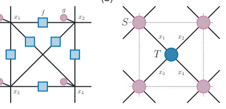
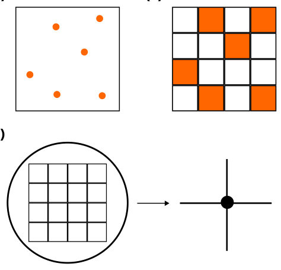
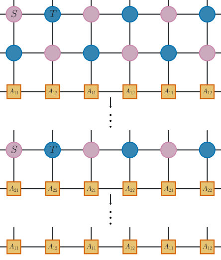
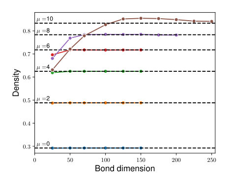
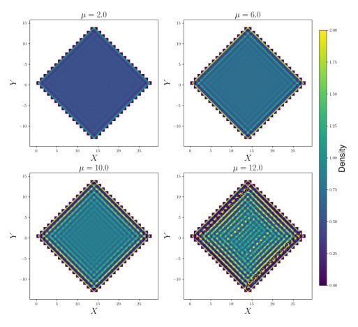
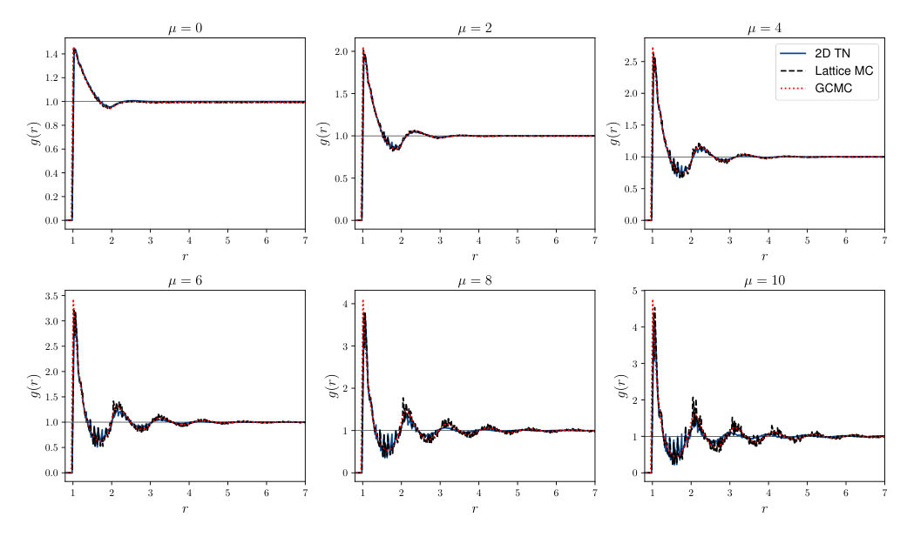
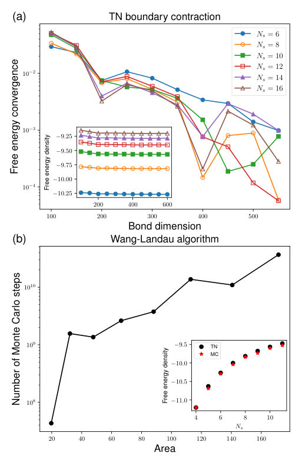
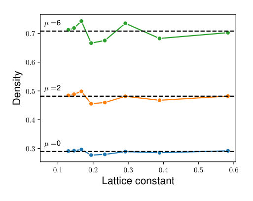

176 papers · 99 relevant · 6 highlighted
Every paper with at least one nonzero topic score, sorted by best-matching score. 🔥 marks scores ≥4/5. Click the title to jump to the full entry below; click [arXiv] to open the paper page. (secondary) marks papers from de-prioritized cond-mat archives.
Rydberg arrays 5/5 · 🔥 QC/QI experiment 4/5 · 🔥 analog quantum simulation 4/5 · 🔥 entanglement & information structure 4/5 · 🔥 non-equilibrium dynamics 4/5 · quantum measurements 3/5 · exotic spin models in light-matter 2/5 · measurement-induced transitions 2/5 · non-equilibrium universality 2/5 · scars & prethermalization 2/5scars & prethermalization 5/5 · 🔥 Rydberg arrays 4/5 · 🔥 non-equilibrium dynamics 4/5 · analog quantum simulation 3/5 · driven-dissipative phase transition 3/5 · entanglement & information structure 3/5 · exotic spin models in light-matter 3/5analog quantum simulation 4/5 · 🔥 driven-dissipative phase transition 4/5 · Tavis-Cummings & cavity-many-emitter 3/5 · correlated cavity matter 3/5 · exotic spin models in light-matter 3/5 · non-equilibrium dynamics 3/5 · non-equilibrium universality 3/5 · quantum optics experiment 3/5 · Keldysh / 2PI / non-Gaussian methods 2/5 · methods for driven-dissipative 2/5 · entanglement & information structure 1/5driven-dissipative phase transition 4/5 · 🔥 entanglement & information structure 4/5 · 🔥 measurement-induced transitions 4/5 · 🔥 non-equilibrium universality 4/5 · non-equilibrium dynamics 3/5 · methods for driven-dissipative 2/5 · quantum measurements 2/5(secondary) — 🔥 driven-dissipative phase transition 4/5 · 🔥 non-equilibrium dynamics 4/5 · 🔥 quantum optics experiment 4/5 · Keldysh / 2PI / non-Gaussian methods 3/5 · methods for driven-dissipative 3/5 · non-equilibrium universality 3/5quantum measurements 4/5 · correlated / nonlocal dissipation 3/5 · driven-dissipative phase transition 3/5 · entanglement & information structure 3/5 · methods for driven-dissipative 3/5 · measurement-induced transitions 2/5 · non-equilibrium dynamics 2/5driven-dissipative phase transition 4/5 · entanglement & information structure 3/5 · methods for driven-dissipative 3/5 · non-equilibrium dynamics 3/5 · Keldysh / 2PI / non-Gaussian methods 2/5 · correlated / nonlocal dissipation 2/5 · non-equilibrium universality 2/5QC/QI experiment 4/5 · 🔥 quantum optics experiment 4/5 · quantum measurements 3/5 · entanglement & information structure 2/5 · interference shaping light 2/5(secondary) — 🔥 QC/QI experiment 4/5 · 🔥 quantum optics experiment 4/5 · quantum measurements 3/5 · spintronics-quantum-optics interface 3/5driven-dissipative phase transition 4/5 · 🔥 non-equilibrium dynamics 4/5 · non-equilibrium universality 3/5 · quantum measurements 2/5non-equilibrium dynamics 4/5 · driven-dissipative phase transition 3/5 · entanglement & information structure 2/5 · non-equilibrium universality 2/5 · quantum measurements 2/5Rydberg arrays 4/5 · analog quantum simulation 3/5 · entanglement & information structure 3/5 · exotic spin models in light-matter 3/5QC/QI experiment 4/5 · 🔥 quantum optics experiment 4/5 · quantum measurements 3/5 · interference shaping light 2/5non-equilibrium dynamics 4/5 · driven-dissipative phase transition 3/5 · methods for driven-dissipative 3/5 · entanglement & information structure 2/5QC/QI experiment 4/5 · 🔥 quantum optics experiment 4/5 · quantum measurements 2/5 · spintronics-quantum-optics interface 2/5QC/QI experiment 4/5 · 🔥 spintronics-quantum-optics interface 4/5 · non-equilibrium dynamics 2/5 · quantum measurements 2/5QC/QI experiment 4/5 · 🔥 quantum optics experiment 4/5 · entanglement & information structure 2/5 · quantum measurements 2/5methods for driven-dissipative 4/5 · non-equilibrium dynamics 3/5 · driven-dissipative phase transition 2/5 · entanglement & information structure 2/5(secondary) — 🔥 spintronics-quantum-optics interface 4/5 · QC/QI experiment 3/5 · correlated / nonlocal dissipation 2/5 · quantum measurements 2/5QC/QI experiment 4/5 · non-equilibrium dynamics 2/5 · quantum measurements 2/5 · quantum optics experiment 2/5QC/QI experiment 4/5 · 🔥 quantum optics experiment 4/5 · interference shaping light 2/5QC/QI experiment 4/5 · spintronics-quantum-optics interface 3/5 · quantum optics experiment 2/5spintronics-quantum-optics interface 4/5 · interference shaping light 3/5 · methods for driven-dissipative 2/5spintronics-quantum-optics interface 4/5 · QC/QI experiment 3/5 · quantum measurements 2/5quantum measurements 4/5 · entanglement & information structure 2/5 · methods for driven-dissipative 2/5QC/QI experiment 4/5 · entanglement & information structure 2/5 · non-equilibrium dynamics 2/5entanglement & information structure 4/5 · 🔥 non-equilibrium dynamics 4/5QC/QI experiment 4/5 · 🔥 quantum optics experiment 4/5non-equilibrium dynamics 4/5 · analog quantum simulation 2/5 · exotic spin models in light-matter 2/5analog quantum simulation 4/5 · exotic spin models in light-matter 3/5QC/QI experiment 4/5 · quantum measurements 3/5quantum optics experiment 4/5 · QC/QI experiment 3/5QC/QI experiment 4/5 · quantum optics experiment 2/5quantum measurements 4/5 · entanglement & information structure 2/5methods for driven-dissipative 4/5 · non-equilibrium dynamics 2/5methods for driven-dissipative 4/5QC/QI experiment 4/5(secondary) — 🔥 spintronics-quantum-optics interface 4/5QC/QI experiment 4/5QC/QI experiment 4/5entanglement & information structure 3/5 · non-equilibrium dynamics 3/5 · Keldysh / 2PI / non-Gaussian methods 2/5 · correlated / nonlocal dissipation 2/5 · methods for driven-dissipative 2/5methods for driven-dissipative 3/5 · correlated / nonlocal dissipation 2/5 · driven-dissipative phase transition 2/5 · entanglement & information structure 2/5 · non-equilibrium dynamics 2/5methods for driven-dissipative 3/5 · Tavis-Cummings & cavity-many-emitter 2/5 · driven-dissipative phase transition 2/5 · non-equilibrium dynamics 2/5 · non-equilibrium universality 2/5methods for driven-dissipative 3/5 · non-equilibrium dynamics 3/5 · entanglement & information structure 2/5 · quantum measurements 2/5methods for driven-dissipative 3/5 · non-equilibrium dynamics 3/5 · correlated / nonlocal dissipation 2/5 · entanglement & information structure 2/5entanglement & information structure 3/5 · correlated / nonlocal dissipation 2/5 · non-equilibrium dynamics 2/5 · quantum measurements 2/5interference shaping light 3/5 · quantum optics experiment 3/5 · QC/QI experiment 2/5non-equilibrium dynamics 3/5 · non-equilibrium universality 3/5methods for driven-dissipative 3/5 · quantum measurements 3/5(secondary) — spintronics-quantum-optics interface 3/5 · QC/QI experiment 2/5QC/QI experiment 3/5 · methods for driven-dissipative 2/5(secondary) — non-equilibrium dynamics 3/5 · spintronics-quantum-optics interface 2/5quantum measurements 3/5 · Keldysh / 2PI / non-Gaussian methods 2/5entanglement & information structure 3/5 · Frenkel-Kontorova 2/5(secondary) — entanglement & information structure 3/5 · Keldysh / 2PI / non-Gaussian methods 2/5quantum measurements 3/5 · entanglement & information structure 2/5non-equilibrium dynamics 3/5 · non-equilibrium universality 2/5Rydberg arrays 3/5quantum measurements 3/5entanglement & information structure 3/5correlated / nonlocal dissipation 2/5 · quantum measurements 2/5 · spintronics-quantum-optics interface 2/5QC/QI experiment 2/5 · quantum optics experiment 2/5 · spintronics-quantum-optics interface 1/5analog quantum simulation 2/5 · interference shaping light 2/5analog quantum simulation 2/5 · non-equilibrium dynamics 2/5(secondary) — quantum optics experiment 2/5 · spintronics-quantum-optics interface 2/5(secondary) — driven-dissipative phase transition 2/5 · non-equilibrium dynamics 2/5(secondary) — Keldysh / 2PI / non-Gaussian methods 2/5 · non-equilibrium dynamics 2/5non-equilibrium dynamics 2/5 · non-equilibrium universality 2/5QC/QI experiment 2/5 · Rydberg arrays 1/5 · quantum measurements 1/5correlated / nonlocal dissipation 2/5 · entanglement & information structure 2/5QC/QI experiment 2/5 · quantum optics experiment 2/5non-equilibrium dynamics 2/5 · non-equilibrium universality 2/5analog quantum simulation 2/5 · methods for driven-dissipative 2/5quantum measurements 2/5methods for driven-dissipative 2/5QC/QI experiment 2/5entanglement & information structure 2/5(secondary) — non-equilibrium dynamics 2/5Keldysh / 2PI / non-Gaussian methods 2/5Keldysh / 2PI / non-Gaussian methods 2/5entanglement & information structure 2/5entanglement & information structure 2/5entanglement & information structure 2/5(secondary) — non-equilibrium dynamics 2/5methods for driven-dissipative 2/5QC/QI experiment 2/5entanglement & information structure 2/5spintronics-quantum-optics interface 2/5Keldysh / 2PI / non-Gaussian methods 2/5methods for driven-dissipative 2/5Keldysh / 2PI / non-Gaussian methods 2/5methods for driven-dissipative 2/5entanglement & information structure 2/5entanglement & information structure 2/5spintronics-quantum-optics interface 2/5(secondary) — non-equilibrium dynamics 2/5analog quantum simulation 2/5Kondo & dissipative impurity 1/5quantum measurements 1/5Papers by authors on your watch list. Click the title to jump to the full entry below; click [arXiv] to open the paper page.
Papers from quant-ph and your primary cond-mat archives (quant-gas, stat-mech, str-el, dis-nn). Highlighted papers (⭐) come first, then everything else sorted by topic-relevance score, highest first.
← Index · ← Previous · Next →
Authors: Alexandros Gezerlis
Type: theory · Category: other · PDF: https://arxiv.org/pdf/2604.24871v1
Analysis basis: full PDF text, analyzed in chunks
Topic relevance: Keldysh / 2PI / non-Gaussian methods 2/5
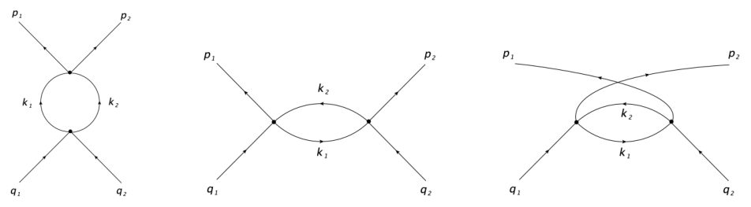
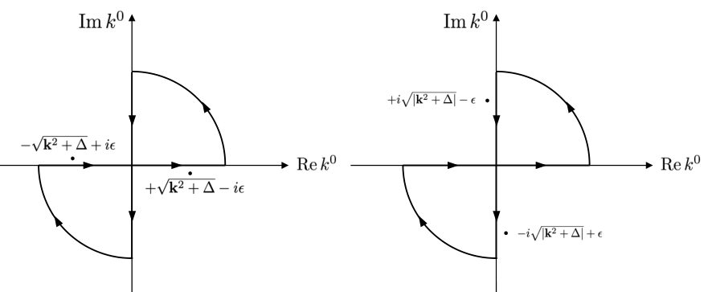
Main problem. The paper identifies and corrects widespread conceptual errors and pedagogical 'muddledness' found in introductory Quantum Field Theory (QFT) textbooks and research literature.
Main result. The author provides rigorous corrections to six specific themes, including the validity of relativistic quantum mechanics, the derivation of Noether's theorem, the proper promotion of fields to operators, particle localization, normal ordering, and the nature of Wick rotation.
Method. The author uses a comparative approach, quoting specific textbook mistakes and providing mathematically rigorous corrections using canonical quantization, contour integration, and the Newton-Wigner position operator.
Summary. This paper serves as a pedagogical critique of common misconceptions in Quantum Field Theory textbooks. The author identifies six specific areas where introductory texts often sacrifice mathematical rigor for simplicity, potentially leading to fundamental misunderstandings. By providing corrected derivations and physical insights, the work aims to prevent the propagation of these errors in the physics literature. It is particularly useful for instructors and graduate students seeking a deeper, more accurate foundation in QFT.
Model / system. The discussion focuses on relativistic scalar field theory (Klein-Gordon field) and scalar electrodynamics, specifically examining the transition from classical Lagrangian/Hamiltonian density to the interacting S-matrix.
Key observables. S-matrix (scattering amplitude), Feynman propagator, probability density, and conserved currents.
Important parameters / regimes. Mass (m), coupling constant (lambda), momentum (k, p, q), and the infinitesimal epsilon (i-epsilon prescription).
Assumptions / limitations. The discussion is limited to the core aspects of QFT relevant to a first-semester graduate course and assumes familiarity with basic relativistic quantum mechanics.
Figures summary. Figure 1 shows momentum-space second-order Feynman diagrams for a 2 to 2 process; Figure 2 illustrates the integration contour in the complex k0 plane for different pole configurations.
Paper structure. The paper begins with a notation summary, followed by a systematic presentation of six thematic errors, each containing a textbook quote, a mathematical correction, and references to authoritative literature, concluding with a pedagogical reflection.
This article discusses incorrect statements appearing in textbooks on quantum field theory (QFT); some of these mistakes also appear in the research literature. The focus is not on errors made by an individual author, but on conceptual muddledness that is widespread in introductory textbooks. We start from a bare-bones summary of QFT, meant to establish the notation. We then turn to our six paradigmatic themes, in each case quoting a specific example of the textbook mistake, a summary of material that is known to experts but is frequently mishandled in introductory works, pointers to authoritative references where the relevant concept is handled properly, as well as a concise correction that rectifies any issues. The goal of this work is to warn readers of the existence of several pitfalls and thereby stop these errors from further propagating in the literature on QFT.
Authors: Gunhee Park, Tomislav Begušić, Si-Jing Du, Johnnie Gray, Garnet Kin-Lic Chan
Type: theory · Category: numerical methods · PDF: https://arxiv.org/pdf/2604.25060v1
Analysis basis: full PDF text, analyzed in chunks
Topic relevance: methods for driven-dissipative 2/5








Main problem. Extending tensor network (TN) methods, which are traditionally limited to lattice models, to simulate interacting particle systems in continuous space.
Main result. The developed TN framework accurately reproduces local observables and captures liquid-to-solid phase transitions in 2D hard-disk systems, offering a deterministic alternative to Monte Carlo methods with linear scaling of computational cost relative to system size.
Method. A real-space discretization and cell-based coarse-graining scheme are used to map continuous particles onto an effective lattice model, which is then solved using TN boundary contraction via Matrix Product States (MPS) and Matrix Product Operators (MPO).
Summary. This paper presents a new way to use tensor networks to study classical statistical mechanics in continuous space. By discretizing space into a grid and using a coarse-graining scheme, the authors transform a continuous particle problem into an effective lattice model. This allows for the deterministic calculation of absolute free energies and local observables, such as density and pair correlation functions. The method is shown to be highly efficient, scaling linearly with system size, and successfully captures the liquid-to-solid phase transition in hard-disk systems.
Model / system. The study focuses on 2D hard-disk systems with a pairwise repulsive potential, where continuous coordinates are mapped to a fine grid and grouped into cells to create an effective lattice representation.
Key observables. Density, pair correlation functions, and absolute free energy density.
Important parameters / regimes. Inverse temperature (beta), chemical potential (mu), lattice constant (a), and tensor network bond dimension (D).
Assumptions / limitations. The method assumes a discretization of continuous space and uses a coarse-graining approximation where each cell contains at most one particle; the current scope is limited to 2D and short-range potentials.
Figures summary. Figure 1 shows the mapping from particles to a coarse-grained cell model; Figure 2 illustrates the factor graph and TN representation; Figure 3 shows the unit cell structure; Figure 4 shows density convergence with bond dimension; Figure 5 displays spatially resolved densities in a finite box; Figure 6 compares pair correlation functions with GCMC; Figure 7 compares free energy convergence and computational scaling; Figure 8 demonstrates convergence to the continuum limit.
Paper structure. The paper introduces the problem of continuous-space simulation, details the discretization and coarse-graining methodology, describes the construction of the tensor network, presents benchmark results against Monte Carlo simulations (density, correlation, and free energy), and concludes with scaling analysis and future directions.
Tensor network (TN) methods are well established for computing partition functions in statistical mechanics, though this use has traditionally been limited to lattice models. We extend the scope of TN methodology to interacting particle systems in continuous space. Through a real-space discretization combined with a cell-based coarse-graining scheme, we formulate an effective lattice model that explicitly preserves spatial locality. The partition function of this model is represented as a TN, and the thermodynamic quantities are computed via boundary contraction. We apply this framework to the two-dimensional hard-disk problem and demonstrate the strengths of the TN formulation compared to existing Monte Carlo simulations.
Authors: Bowen Yang, Matthew Yu
Type: theory · Category: quantum information and computing · PDF: https://arxiv.org/pdf/2604.24847v1
Analysis basis: full PDF text, analyzed in chunks
Topic relevance: entanglement & information structure 2/5
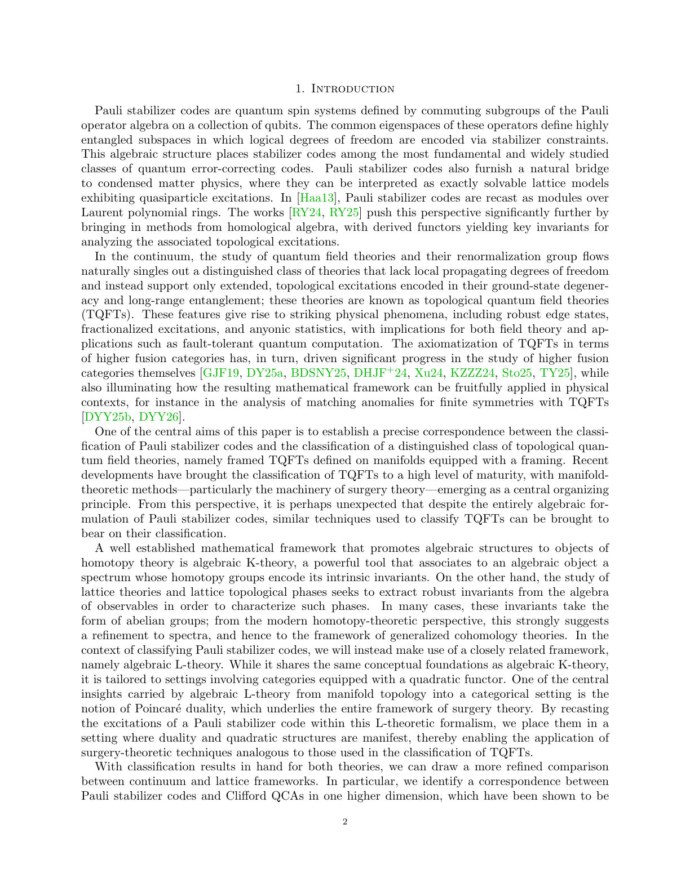
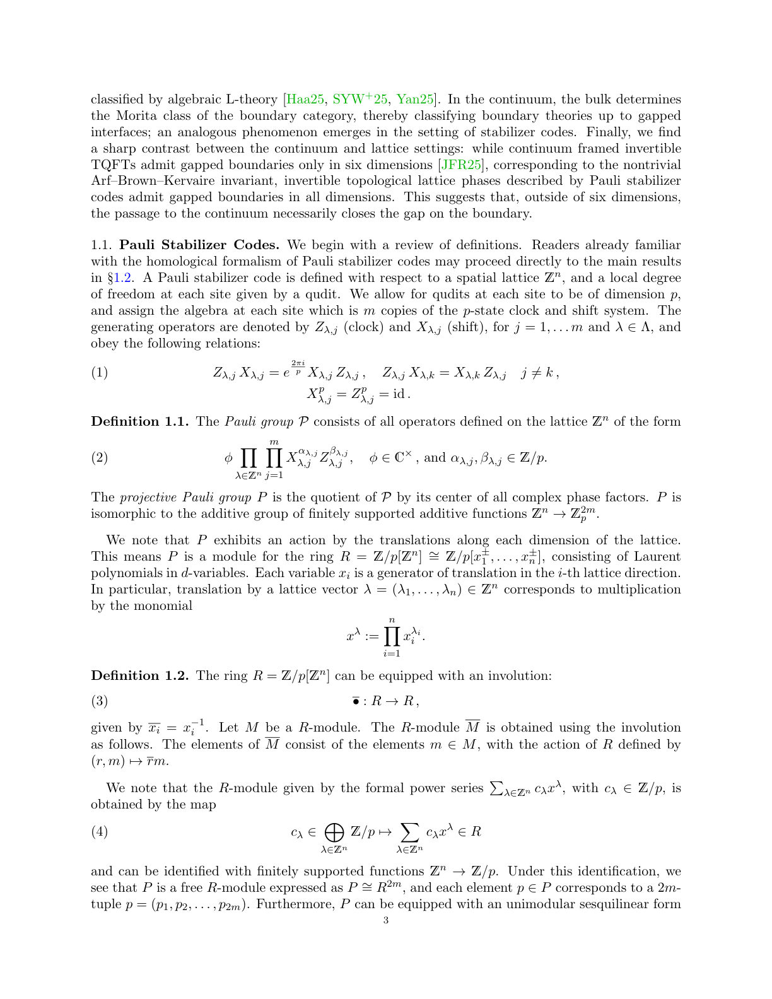
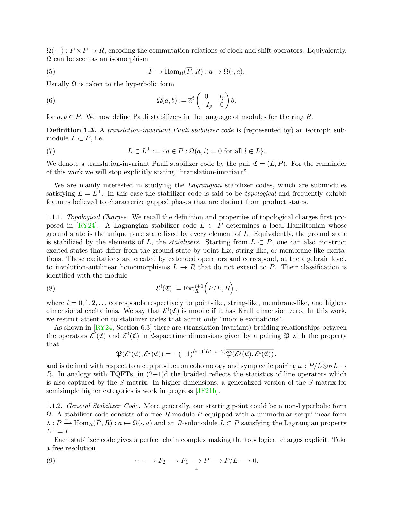
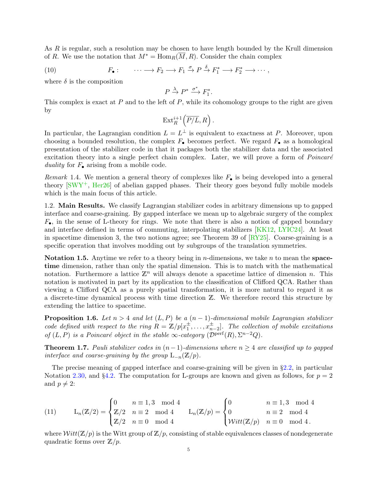
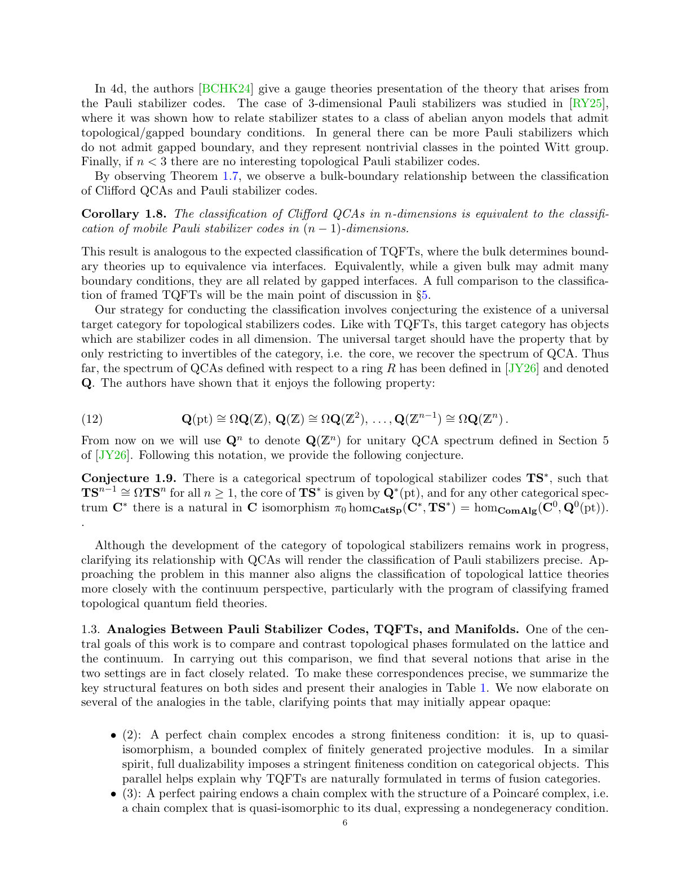
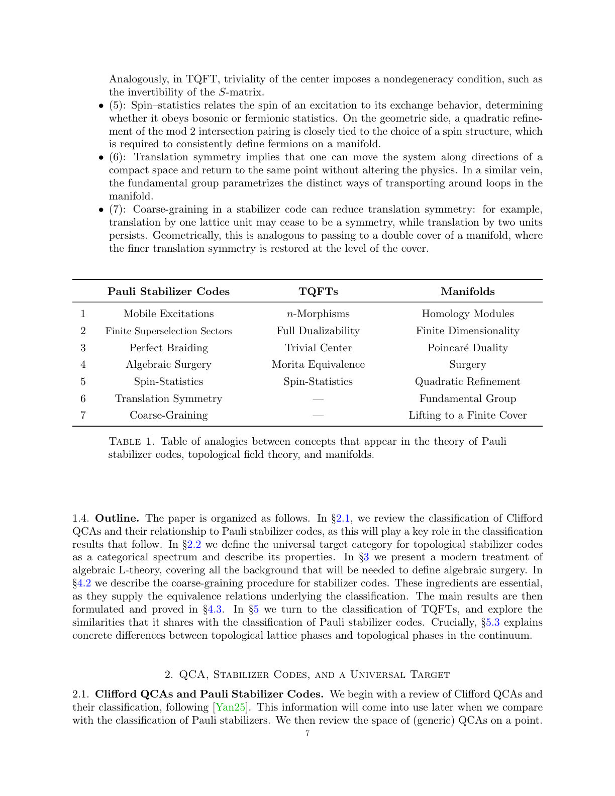
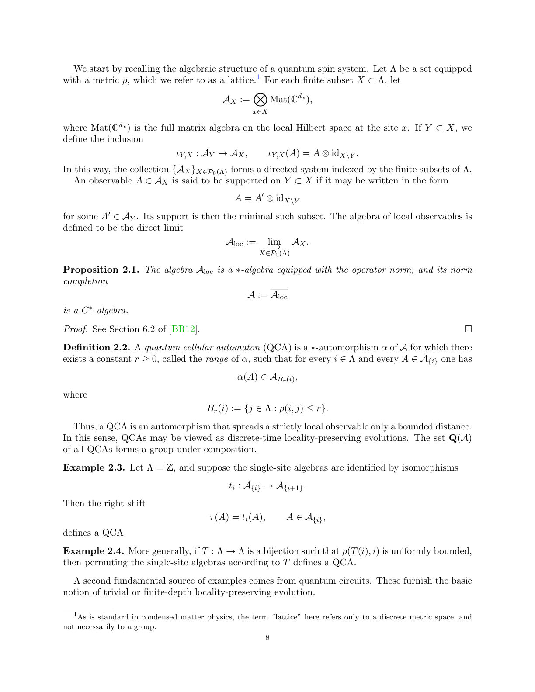
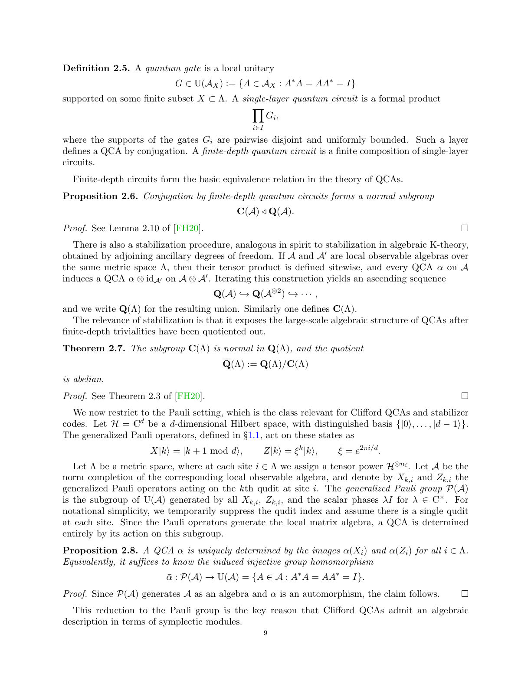
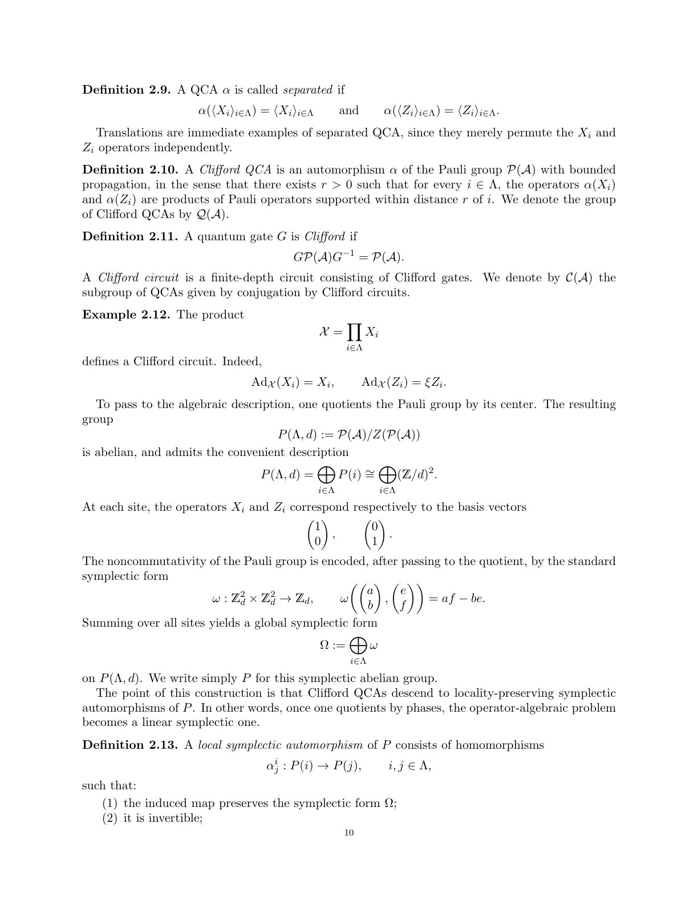
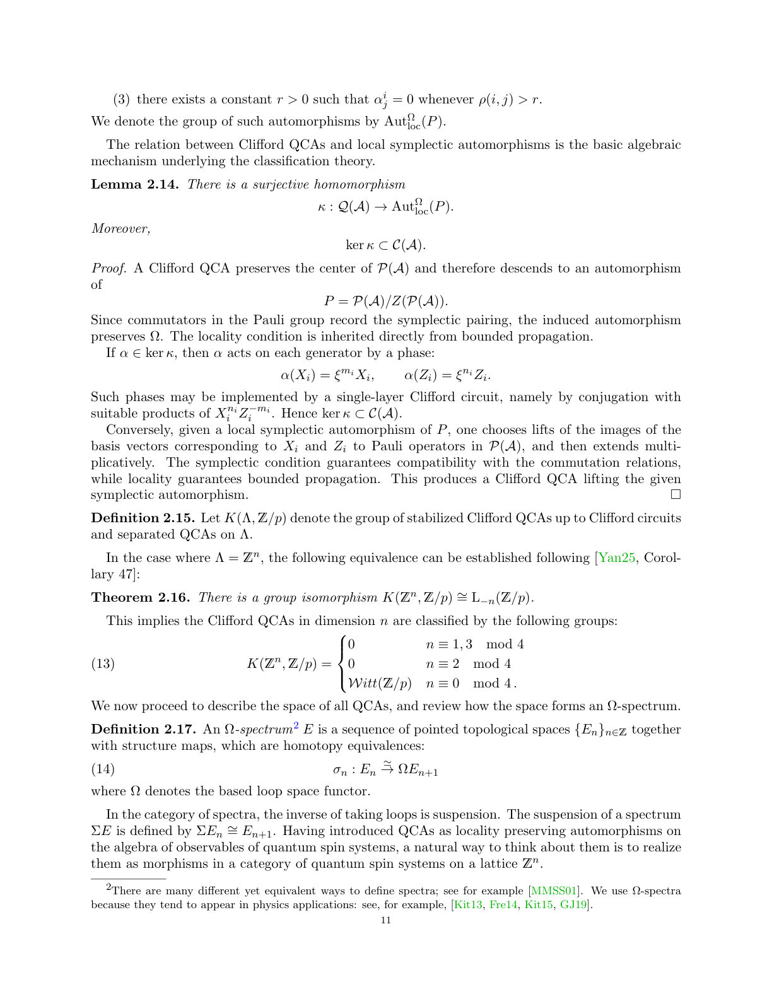
Main problem. The classification of mobile Pauli stabilizer codes up to gapped interfaces and coarse-graining, and establishing the relationship between these lattice models and continuum framed TQFTs.
Main result. The authors establish a bulk-boundary correspondence where the equivalence class of a Pauli stabilizer code is described by a Clifford QCA in one dimension higher, and identify qualitative distinctions between lattice and continuum theories regarding gapped boundaries.
Method. The study utilizes algebraic L-theory, surgery theory, and homological algebra within a categorical framework of perfect chain complexes and quadratic functors.
Summary. This paper provides a rigorous mathematical classification of Pauli stabilizer codes using the framework of algebraic L-theory. It establishes a fundamental link between lattice-based stabilizer codes and continuum-based topological quantum field theories (TQFTs). A key finding is a bulk-boundary correspondence relating stabilizer codes to Clifford Quantum Cellular Automata. The work also highlights how lattice theories can admit gapped boundaries in dimensions where continuum TQFTs cannot.
Model / system. The system consists of Pauli stabilizer codes defined by commuting subgroups of the Pauli operator algebra on a spatial lattice Z^n, specifically focusing on translation-invariant, mobile excitations.
Key observables. Topological charges (point-like, string-like, and membrane-like excitations) and their braiding relationships.
Important parameters / regimes. Lattice dimension n, Krull dimension of excitations (restricted to zero for mobile codes), and the prime p for qudit systems.
Assumptions / limitations. The work assumes translation invariance and restricts the scope to 'mobile' stabilizer codes where excitations have Krull dimension zero.
Figures summary. Table 1 provides a structural analogy between Pauli stabilizer codes, TQFTs, and manifold theory, mapping physical concepts like mobile excitations to mathematical concepts like n-morphisms.
Paper structure. The paper introduces the algebraic framework for stabilizer codes, develops a classification using L-theory, establishes a bulk-boundary correspondence with Clifford QCAs, and concludes by comparing the results to the classification of framed TQFTs.
We classify mobile Pauli stabilizer codes up to gapped interfaces and coarse-graining using the framework of algebraic $\mathrm{L}$-theory. We compare this classification with that of framed TQFTs, theories that arise naturally in the continuum, highlighting a close structural relationship between the two. Our approach is formulated in the category of perfect chain complexes equipped with quadratic functor over the Laurent polynomial ring $R = \mathbb{Z}/p[x_1^{\pm 1}, \ldots, x_n^{\pm 1}]$, within which the collection of topological operators of Pauli stabilizer codes arise naturally as objects. In particular, we establish a bulk-boundary correspondence for lattice theories: the equivalence class of a Pauli stabilizer code up to gapped interface is described by a Clifford QCA in one dimension higher. This is done using the universal target category for stabilizer codes, which is the categorical spectrum whose existence and universal properties are introduced in this work. We conclude by highlighting subtle differences between the classification of Pauli stabilizer codes and TQFTs, leading to qualitative distinctions between lattice and continuum theories.
Authors: David González-Lociga, Simeon Ball
Type: theory · Category: quantum information and computing · PDF: https://arxiv.org/pdf/2604.25790v1
Analysis basis: full PDF text, analyzed in chunks
Topic relevance: entanglement & information structure 2/5
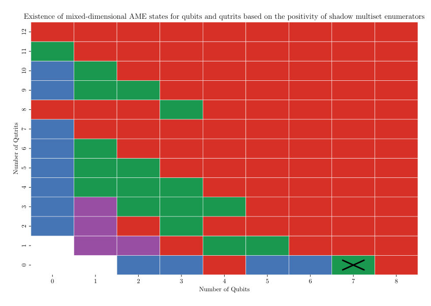
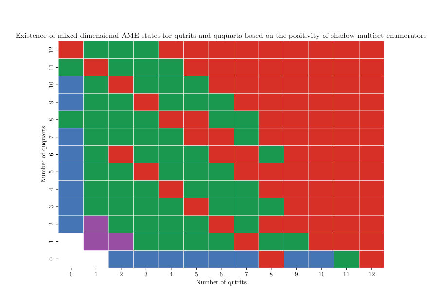
Main problem. The lack of a formal mathematical framework to characterize quantum error-correcting codes (QECC) and absolutely maximally entangled (AME) states in heterogeneous quantum architectures where local dimensions vary across subsystems.
Main result. The derivation of a mixed-dimensional quantum MacWilliams identity and shadow identity, which allows for the formulation of generalized Hamming, Singleton, and Scott bounds, as well as a new tighter Singleton bound for pure codes.
Method. The authors introduce a framework based on dimension multisets and multivariate weight enumerators, utilizing linear programming and a combinatorial grid method for state construction.
Summary. This paper develops a new mathematical language to describe quantum error correction in heterogeneous systems, such as networks combining qubits and higher-dimensional qudits. By replacing standard scalar weights with dimension multisets, the authors establish a mixed-dimensional version of the MacWilliams identity. This allows them to derive new, tighter bounds on code parameters and identify specific configurations where absolutely maximally entangled states are physically impossible. The work provides a systematic way to evaluate the viability of complex, multi-dimensional quantum architectures.
Model / system. Mixed-dimensional Hilbert spaces formed by the tensor product of subsystems with varying local dimensions (e.g., combinations of qubits, qutrits, and ququarts) representing heterogeneous quantum networks.
Key observables. Shor-Laflamme enumerators, unitary weight enumerators, shadow weight enumerators, and dimensional minimum distance.
Important parameters / regimes. Code dimension (K), dimensional minimum distance (D), dimension multisets, and the AME threshold (Delta).
Assumptions / limitations. The framework assumes a 'nice error basis' closed under multiplication and that the operators used in the weight enumerators are Hermitian.
Figures summary. Heatmaps showing the existence/non-existence landscape of AME states for varying qubit/qutrit/ququart configurations, and combinatorial grids used for state construction.
Paper structure. The paper begins by introducing the dimension multiset framework, moves to the derivation of the mixed-dimensional MacWilliams and shadow identities, establishes generalized bounds (Hamming, Singleton, Scott) and a feasibility linear program, and concludes with the analysis and construction of AME states.
As emerging quantum architectures evolve into heterogeneous networks combining different physical substrates, such as qubits for logic and higher-dimensional qudits for robust communication, the traditional scalar metrics of quantum error correction become insufficient. To address this, we introduce a mathematical framework based on dimension multisets to characterize quantum error-correcting codes (QECC) and absolutely maximally entangled (AME) states in mixed-dimensional Hilbert spaces. By replacing scalar weights with multisets, we accurately capture the exact physical composition of error supports across these diverse systems. Our central result is the mixed-dimensional quantum MacWilliams identity, which establishes the formal algebraic relationship between Shor-Laflamme enumerators and unitary weight enumerators. From this foundation, we deduce the mixed-dimensional shadow identity and derive rigorous, generalized constraints on code parameters, explicitly formulating the mixed-dimensional quantum Hamming, Singleton and Scott bounds, and developing a linear program to systematically evaluate code viability. For the Singleton bound, a tighter bound that has no homogeneous analogue is derived for pure mixed-dimensional codes. Finally, we deploy this enumerator machinery to thoroughly analyze AME states, utilizing shadow inequalities to constrain their existence and introducing a combinatorial grid method for the explicit construction of mixed-dimensional tripartite AME states.
Authors: Zhongbin Wang, Wenlong Tang, Simin Pang, Hongxing Zhu, Renkang Fan, Baohai Jia, Junxue Li, Ben Xu, Jun Zhang, Lin Xie, Jiaqing He
Type: experiment · Category: strongly correlated electrons · PDF: https://arxiv.org/pdf/2604.25115v1
Analysis basis: full PDF text, analyzed in chunks
Topic relevance: spintronics-quantum-optics interface 2/5
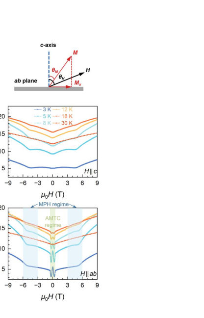
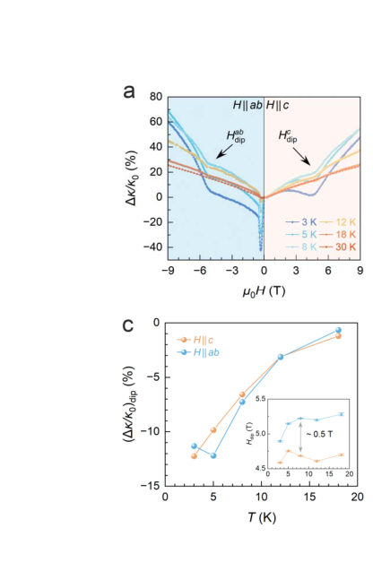
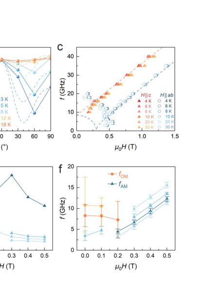
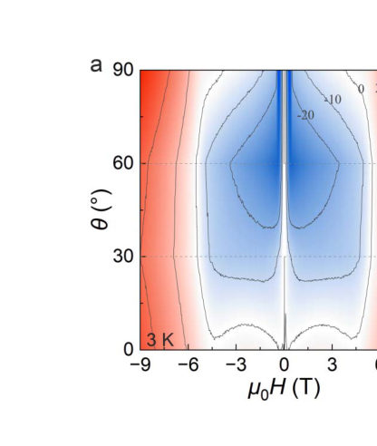
Main problem. The difficulty of actively manipulating phonon transport due to the charge-neutral nature of heat carriers and the lack of a unified framework for controlling them via spin-phonon coupling.
Main result. Discovery of two distinct magnetic-field-tunable regimes in thermal conductivity: a high-field regime driven by isotropic magnon-phonon hybridization (magnon polarons) and a low-field regime driven by anisotropic magnon gap softening.
Method. Integration of four-probe longitudinal thermal conductivity measurements with Brillouin light scattering (BLS) and ferromagnetic resonance (FMR) spectroscopy.
Summary. This paper demonstrates a method to control heat transport in a 2D magnetic insulator using magnetic fields. The researchers identified two different ways that spin-phonon coupling affects thermal conductivity: one at high fields through the creation of hybrid magnon-phonon particles, and another at low fields through the rotation of magnetization. This work provides a framework for using magnetic field magnitude and direction as 'knobs' to engineer phonon transport in van der Waals materials.
Model / system. The physical system is Cr2Ge2Te6 (CGT), a two-dimensional van der Waals ferromagnetic insulator with strong magnetocrystalline anisotropy.
Key observables. Thermal conductivity (kappa), relative change in thermal conductivity (delta-kappa/kappa0), magnon frequency, and magnetic anisotropy gap.
Important parameters / regimes. Magnetic field magnitude (H), field orientation (theta), temperature (T), and the saturation field (Hs).
Assumptions / limitations. The study assumes the validity of the magnon polaron model for high-field resonance and uses an empirical exponential function to approximate the monotonic background of thermal conductivity.
Figures summary. Fig 1: Measurement setup and temperature/field dependence of kappa showing ballistic, AMTC, and MPH regimes. Fig 2: Evidence of high-field resonance dips and calculated magnon-phonon dispersion relations. Fig 3: Low-field AMTC analysis including angular dependence and BLS spectra. Fig 4: Magnetothermal transport phase diagram and thermal quenching of SPC features.
Paper structure. The paper introduces the challenge of phonon manipulation, presents experimental thermal transport data, identifies two anomalous magnetic field regimes, uses spectroscopic techniques (BLS/FMR) to reveal the microscopic origins (magnon-phonon hybridization and gap softening), and concludes with a phase diagram and implications for phonon engineering.
The active manipulation of phonon transport remains a central challenge in phononics and spin caloritronics due to the charge-neutral nature of heat carriers. Spin-phonon coupling (SPC) offers a promising route for the dynamic control of heat carriers, yet its progress has been limited due to the lack of a unified framework and suitable material platforms. Here, we report on the magnetic field-tunable phonon transport behavior in the ferromagnetic insulator Cr2Ge2Te6. We observed two distinct anomalous regimes at both the high and low fields that were governed by isotropic magnon-phonon hybridization and an anisotropic magnon softening process, respectively. By integrating detailed transport behavior with Brillouin light scattering and ferromagnetic resonance, we uncovered the microscopic origins of these anomalous regimes and demonstrated that both the field magnitude and orientation could act as versatile tuning knobs to manipulate the thermal conductivity. Our findings provide experimental evidence of the SPC effect on phonon transport, demonstrating the dual impact of SPC within a unified system. This work will not only broaden the fundamental understanding of quasiparticle interactions but also establish a viable framework for dynamic phonon engineering. Furthermore, the characteristics of this system highlight the potential for achieving field-tunable phonon transport in similar platforms such as two-dimensional (2D) magnetic materials.
Authors: Ryutaro Okuma, Yuita Fujisawa, Natsumi Maekawa, Akiko Nakao, Yoshihisa Ishikawa, Riki Kobayashi, Yoshinori Okada, Daichi Ueta
Type: both · Category: strongly correlated electrons · PDF: https://arxiv.org/pdf/2604.25436v1
Analysis basis: full PDF text, analyzed in chunks
Topic relevance: Kondo & dissipative impurity 1/5
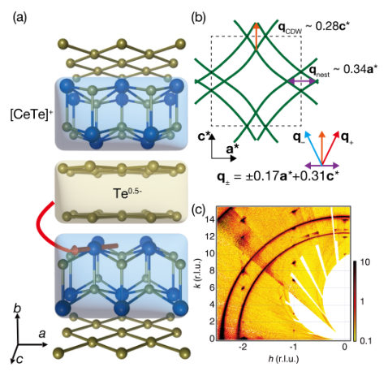
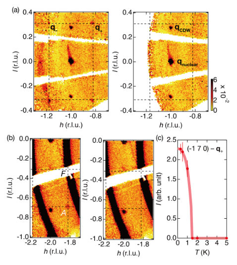
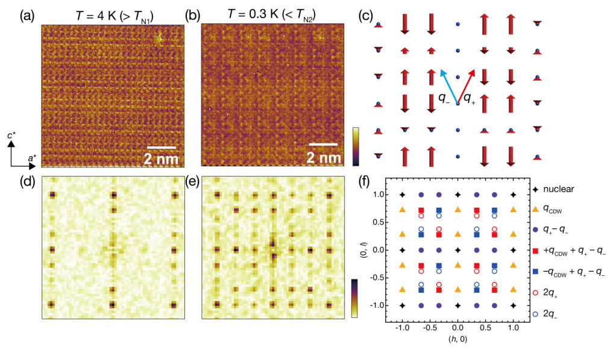
Main problem. The study aims to determine the microscopic magnetic structure of the van der Waals metal CeTe3 and understand the interplay between magnetism, c-f hybridization, and charge-density-wave (CDW) instabilities.
Main result. The researchers identified a double-q magnetic order with moments predominantly aligned along the c-axis, where the reduced magnetic moment indicates strong quantum fluctuations driven by c-f hybridization.
Method. The study combines single-crystal neutron diffraction down to 0.3 K with scanning tunneling microscopy (STM) to analyze magnetic Bragg peaks and real-space charge modulations.
Summary. This paper investigates the magnetic ground state of the van der Waals metal CeTe3. Using neutron diffraction and STM, the authors reveal a double-q magnetic order with significantly reduced moments due to quantum fluctuations. They demonstrate that the magnetic structure is intimately linked to the material's itinerant charge degrees of freedom and residual CDW instabilities. This work provides key insights into how magnetism and conduction electrons interact in low-dimensional van der Waals materials.
Model / system. The system is CeTe3, a van der Waals antiferromagnet consisting of magnetic [CeTe]+ layers coupled to highly conducting Te0.5- square nets, characterized by a quasi-two-dimensional electronic structure.
Key observables. Magnetic propagation vectors (q_plus and q_minus), magnetic Bragg peaks, ordered magnetic moment, and charge density modulations (FFT peaks).
Important parameters / regimes. Magnetic transition temperatures (TN1 approx 3 K, TN2 approx 1.3 K), propagation vectors q_plus = (0.17, 0, 0.31), and the reduced magnetic moment of approx 0.32 mu_B.
Assumptions / limitations. The magnetic structure refinement was performed using an undistorted Cmcm structure without explicitly including the CDW modulation.
Figures summary. Fig 1 shows the crystal structure, Fermi surface, and neutron diffraction patterns; Fig 2 shows magnetic structure refinement and satellite peaks; Fig 3 presents STM conductance maps and the schematic of the double-q spin-density-wave structure.
Paper structure. The paper introduces the CeTe3 system, presents neutron diffraction data to identify magnetic propagation vectors, uses STM to confirm the double-q nature via charge modulation, and discusses the physical implications of c-f hybridization and CDW coupling.
CeTe$_3$ is a van der Waals antiferromagnet composed of magnetic [CeTe]$^+$ layers coupled to highly conducting Te$^{0.5-}$ square nets. Its simple quasi-two-dimensional electronic structure and cleavable nature make it an appealing platform for exploring correlated magnetism in reduced dimensions. To clarify the nature of its low-temperature state, we performed single-crystal neutron diffraction down to 0.3 K, complemented by scanning tunneling microscopy. A magnetic transition near 1.5 K gives rise to incommensurate Bragg peaks at $q_{\pm}\sim(\pm0.17,0,0.31)$, consistent with a double-$q$ magnetic order whose moments are predominantly aligned along the $c$ axis. The strongly reduced ordered moment is consistent with enhanced quantum fluctuations driven by $c$-$f$ hybridization, while the deviation of the propagation vectors from simple nesting suggests a coupling to residual charge-density-wave instabilities of the quasi-one-dimensional Te-derived bands. These results indicate that CeTe$_3$ hosts a correlated magnetic ground state where spin and itinerant charge degrees of freedom are intimately linked in the van der Waals limit.
Authors: Spyros Tserkis, Muhammad Umer, Eleftherios Mastorakis, Dimitris G. Angelakis
Type: theory · Category: quantum information and computing · PDF: https://arxiv.org/pdf/2604.25861v1
Analysis basis: full PDF text, analyzed in chunks
Topic relevance: quantum measurements 1/5
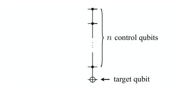
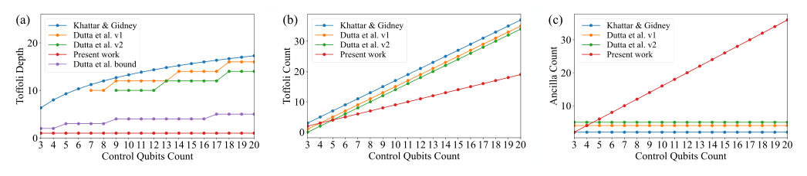
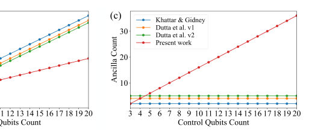
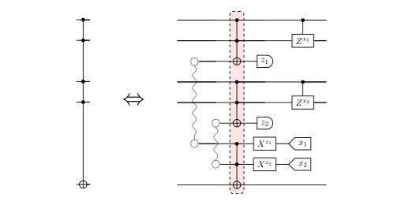
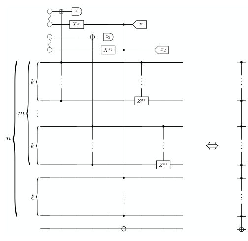
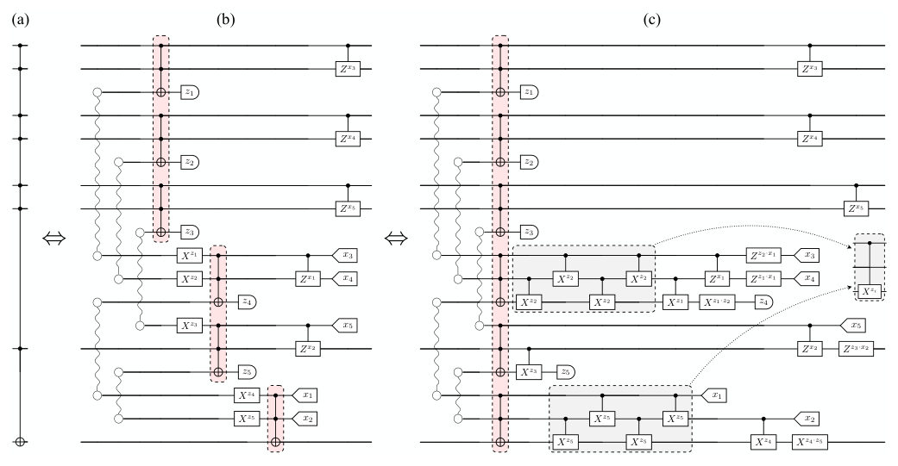
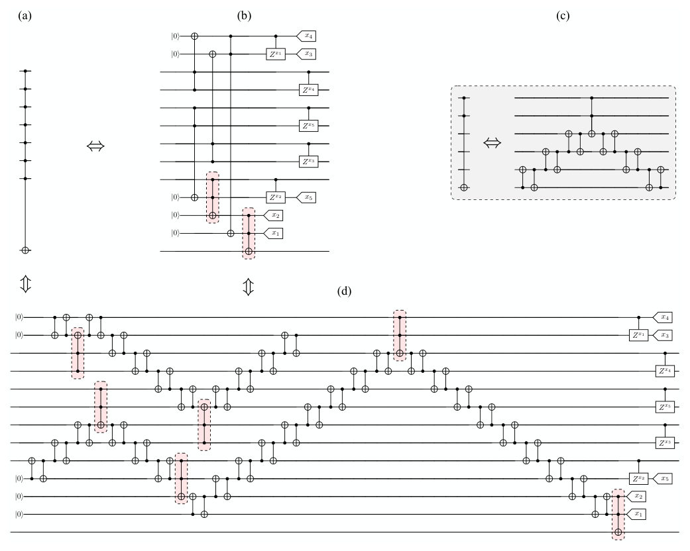
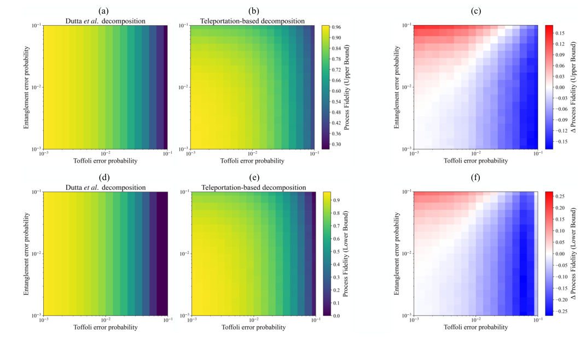
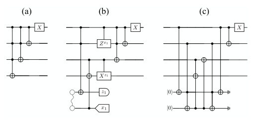
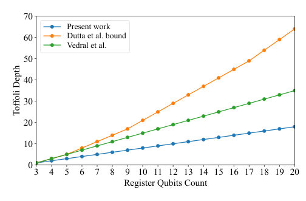
Main problem. The decomposition of multi-controlled Toffoli (MCT) gates into simpler gates typically results in high circuit depth, which increases susceptibility to decoherence.
Main result. The authors introduce a teleportation-based decomposition that achieves a unit Toffoli depth, independent of the number of controls, while maintaining a relatively low Toffoli count.
Method. A recursive gate teleportation protocol that uses ancilla qubits and Bell states to decompose an (n+1)-qubit MCT gate into smaller MCT gates and measurements.
Summary. This paper presents a new method for decomposing multi-controlled Toffoli gates using quantum teleportation. The proposed technique achieves a constant Toffoli depth that does not increase with the number of control qubits. While it requires a linear increase in ancilla qubits, it offers significant advantages for circuit depth and error resilience in specific noise regimes. The authors demonstrate the utility of this method in optimizing quantum adders, QROM, and quantum machine learning architectures.
Model / system. General quantum computing circuits and architectures, specifically focusing on the implementation of MCT gates, quantum adders, QROM, and quantum machine learning primitives.
Key observables. Toffoli depth, Toffoli count, ancilla qubit count, and process fidelity.
Important parameters / regimes. Number of control qubits (n), Toffoli error probability, and entanglement error probability.
Assumptions / limitations. The protocol assumes the ability to distribute entangled pairs across non-neighboring (distant) qubits and assumes a hierarchical error scaling between different gate types.
Figures summary. Figure 1 shows the MCT gate circuit; Figure 2 compares depth, count, and ancilla scaling against existing methods; Figure 3 illustrates the teleportation protocol; Figure 4 and 5 show specific gate decompositions (MCT5, MCT8); Figure 7 shows process fidelity bounds and differences; Figure 8 and 9 compare adder constructions; Figure 10 shows QROM and QML applications.
Paper structure. The paper introduces the problem of MCT decomposition, presents a new teleportation-based protocol, provides a comparative analysis of gate metrics (depth, count, ancilla), evaluates noise resilience via fidelity simulations, and demonstrates practical applications in quantum adders, QROM, and quantum machine learning.
The decomposition of complex quantum operations into experimentally feasible gate sets has been a central challenge since the early development of quantum computing. The multi-controlled Toffoli (MCT) gate is a key example, with applications across a wide range of quantum algorithms, whose decomposition into smaller gates, however, typically leads to deep circuits. In this work, we introduce a teleportation-based decomposition that implements an arbitrary MCT gate with unit Toffoli depth, independent of the number of controls, while maintaining a relatively low Toffoli count compared to existing approaches. This is achieved at the cost of a linear overhead in ancilla qubits and the ability to distribute entangled pairs across distant qubits, a capability already available in several quantum computing platforms. We further demonstrate the advantages of this implementation in circuits that rely on MCT gates, such as the adder operator, quantum read-only memory, quantum neurons, and quantum decision trees.
Papers from primary archives without highlighted authors or any topic match. Click to expand.
Authors: Harikrishnan K J, Amit Kumar Pal
Type: theory · Category: quantum information and computing · PDF: https://arxiv.org/pdf/2604.25424v1
Analysis basis: full PDF text, analyzed in chunks
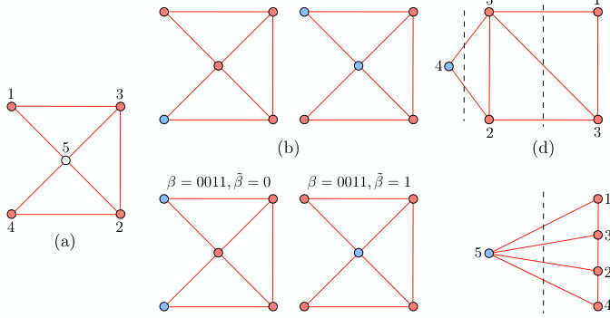
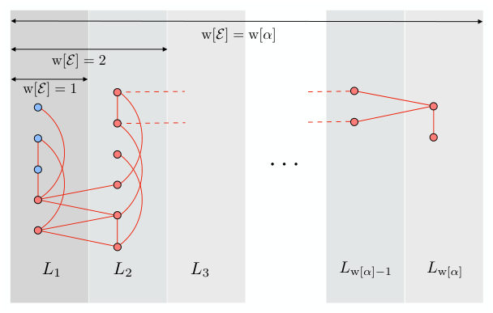
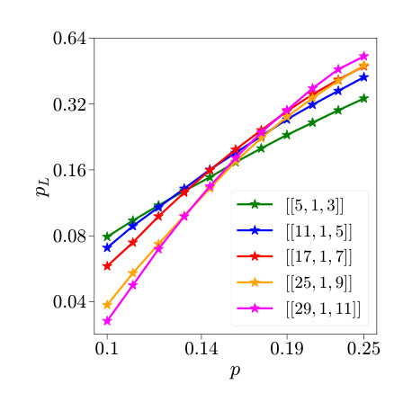
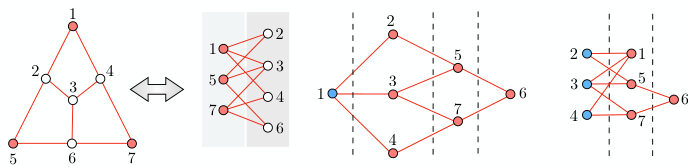
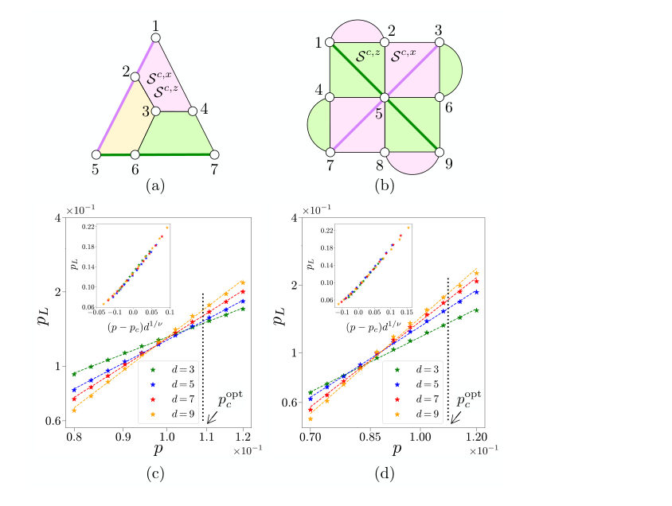
Main problem. The difficulty of developing efficient, generalized decoding strategies for all stabilizer codes, particularly non-CSS codes, where standard methods like Belief Propagation often fail or are computationally prohibitive.
Main result. The development of a graph-aware Bounded Distance Decoder (BDD) that achieves near-optimal performance for CSS codes and satisfactory performance for non-CSS codes up to distance d=11, accompanied by the QGDecoder open-source library.
Method. The authors leverage the local Clifford equivalence between stabilizer codes and graph states, using a graph-based framework with strategic pruning (via a feed-forward network structure) and structured sampling to reduce the search space.
Summary. This paper presents a new decoding strategy called Graph-Aware Bounded Distance Decoding that works for any stabilizer code by mapping them to graph states. By using graph pruning and structured sampling, the authors significantly reduce the computational complexity of finding the most likely error. The method shows high efficiency for both CSS and non-CSS codes and provides a new open-source tool, QGDecoder, for the quantum error correction community.
Model / system. The study focuses on quantum stabilizer codes, including both CSS (surface and color codes) and non-CSS families, subjected to depolarizing and bit-flip error models.
Key observables. Logical error rate (pL), threshold error probability (pc), and critical exponent (nu).
Important parameters / regimes. Code distance (d), physical error rate (p), target weight threshold (T), and number of physical (N) and logical (k) qubits.
Assumptions / limitations. The decoder assumes perfect syndrome measurement and focuses on specific error models like depolarizing and bit-flip noise.
Figures summary. Figure 1 shows the graph representation of the [[5,1,3]] code; Figure 2 illustrates the feed-forward network structure for graph pruning; Figure 3 displays logical error rate vs. physical error rate for non-CSS codes; Figure 4 shows the bipartite graph syndrome for CSS codes; Figure 5 shows code schematics and data collapse plots for threshold estimation.
Paper structure. The paper introduces the decoding bottleneck, establishes the mathematical mapping between stabilizer codes and graph states, proposes the graph-aware BDD algorithm with pruning techniques, demonstrates performance on non-CSS and CSS codes, performs finite-size scaling analysis for thresholds, and introduces the QGDecoder software.
We formulate a bounded distance decoding strategy applicable to all stabilizer codes including both CSS and non-CSS code-families. The framework emerges out of the local Clifford equivalence between arbitrary stabilizer states and graph states. Using the graphical representation of the stabilizers and the syndromes, we constitute the bounded distance decoding as an adaptable generalization of maximum likelihood decoding, ensuring correction of all errors with weights upper bounded by a target weight. We show that strategic pruning associated with a feed-forward network structure of the graph can reduce the search space and subsequently the runtime of the designed decoder. We demonstrate satisfactory performance of the bounded distance decoder in the case of the optimal non-CSS codes up to distance $d=11$ subjected to the depolarizing error on all qubits, and near-optimal decoding for the color and the surface codes, both belonging to the CSS family, under the bit-flip errors on the qubits. We also develop an open-source library, QGDecoder, enabling the graph-aware bounded distance decoding of arbitrary stabilizer codes.
Authors: Chih-Kang Huang, Giacomo Antonioli, Frédéric Barbaresco
Type: theory · Category: quantum information and computing · PDF: https://arxiv.org/pdf/2604.25825v1
Analysis basis: full PDF text, analyzed in chunks
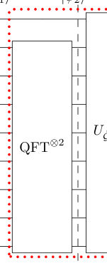
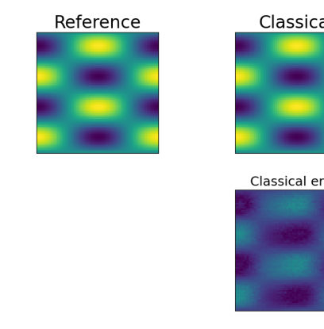
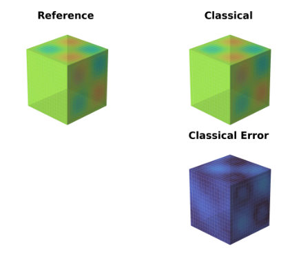
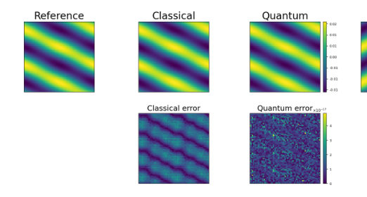
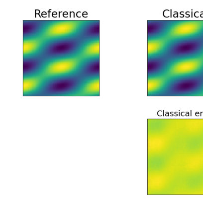
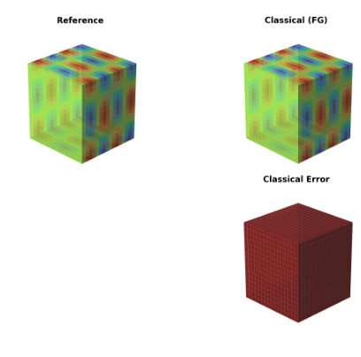
Main problem. Addressing the curse of dimensionality in solving Partial Differential Equations (PDEs) by developing a quantum algorithmic alternative to standard matrix inversion methods.
Main result. The authors present a quantum spectral framework that achieves polylogarithmic gate complexity and demonstrates numerical accuracy comparable to classical FFT-based spectral solvers.
Method. The framework utilizes the Quantum Fourier Transform (QFT) combined with Quantum Block Encoding (QBE) and quantum reversible arithmetic to implement an inverse spectral filter.
Summary. This paper introduces a specialized quantum subroutine for solving linear PDEs by exploiting the diagonal structure of differential operators in the Fourier domain. By using Quantum Block Encoding and reversible arithmetic, the authors bypass the high complexity of generic matrix encoding methods. The framework is validated against classical spectral methods for Poisson, Helmholtz, and diffusion equations. This approach offers a path toward efficient quantum simulation of complex physical systems in high dimensions.
Model / system. The mathematical models include second-order linear elliptic (Poisson, Helmholtz) and parabolic (anisotropic diffusion) PDEs on a d-dimensional flat torus.
Key observables. Relative L2-errors, energy functional E(u) for dissipation tracking, and error distributions.
Important parameters / regimes. Dimensionality (d), grid size (N), condition number (kappa), and precision (epsilon).
Assumptions / limitations. Periodic boundary conditions, constant coefficients, and a noiseless quantum computing setting with efficient state preparation.
Figures summary. The figures illustrate quantum circuit sequences for controlled rotations and block encoding, the d-dimensional QFT, and visual comparisons of quantum vs. classical solution distributions and energy dissipation trajectories.
Paper structure. The paper progresses from defining the limitations of classical PDE solvers to proposing a quantum spectral framework, detailing the block encoding and arithmetic implementation, providing complexity analysis, and concluding with numerical validation via Qiskit simulations.
Partial differential equations (PDEs) are fundamental across numerous scientific fields. As these problems scale to high dimensions, classical numerical schemes introduce severe computational bottlenecks, known as the curse of dimensionality. Attempts to solve this problem typically rely on either classical sparsity and low-rank decompositions, or neural network surrogate models. On the other hand, Quantum Computing offers a promising alternative, as it allows us to operate in significantly larger spaces while demanding far fewer resources. In this work, we present a quantum subroutine to solve second-order linear PDEs by exploiting the structural properties of the filter in Fourier space using Quantum Block Encoding (QBE) with quantum reversible arithmetic. This approach serves as a specialized alternative to standard quantum matrix inversion, which typically relies solely on Quantum Singular Value Transformation (QSVT) without exploiting the inherent structural properties of the matrix. We validate the proposed methodology against its classical counterpart to prove its correctness. This framework provides a foundation for extending these methods toward quantum group Fourier transforms, wavelet-based analysis, and equivariant quantum neural networks (EQNNs), offering a promising path toward solving broader classes of problems, including nonlinear PDEs.
Authors: Thiago Assis, Pedro Baptista, Laila Lopes, Diego Ferreira, Gabriel Coutinho
Type: theory · Category: quantum information and computing · PDF: https://arxiv.org/pdf/2604.25058v1
Analysis basis: full PDF text, analyzed in chunks
Main problem. The performance of QAOA on NISQ devices is degraded by SWAP gates required to implement non-native interactions on sparse hardware topologies. The paper seeks to determine if a hardware-compatible approximation of the cost Hamiltonian can outperform an exact but noisy implementation.
Main result. The authors propose a SWAP-free framework that uses a Mixed-Integer Semidefinite Program (MISDP) to optimize qubit mapping and Hamiltonian approximation. They demonstrate that for larger problem sizes (n > 20), this hardware-aware approximation significantly outperforms the standard SWAP-induced noise baseline.
Method. The framework uses an MISDP formulation to simultaneously select a hardware-compatible cost matrix and optimize qubit allocation. For larger instances, the authors introduce spectral-based heuristics (e.g., Perron and Laplacian-based) to solve the optimization problem efficiently.
Summary. This paper addresses the high error rates in NISQ-era quantum computing caused by SWAP gates during algorithm transpilation. Instead of using an exact Hamiltonian that requires many noisy gates, the authors propose modifying the problem itself to fit the hardware's native connectivity. By using a mathematical framework to find the best hardware-compatible approximation, they show that an imprecise but 'SWAP-free' algorithm can actually produce more accurate results than an exact but heavily noisy one as the number of qubits increases.
Model / system. The study focuses on the Quantum Approximate Optimization Algorithm (QAOA) applied to Quadratic Unconstrained Binary Optimization (QUBO) problems, specifically cardinality-constrained models. The physical model involves an XY-type mixer Hamiltonian and a cost Hamiltonian implemented on a hardware graph representing NISQ device connectivity.
Key observables. The deviation/error between original and embedded cost matrices (lambda), the optimality gap, and the normalized lambda objective value.
Important parameters / regimes. Graph density (d), number of qubits (n), cardinality constraint (k), number of QAOA layers (l), and CNOT error rate (0.33%).
Assumptions / limitations. The study assumes perfect classical optimization of the variational parameters (beta and gamma) to isolate the effects of qubit allocation and noise.
Figures summary. Figure 1 compares various spectral heuristics against a brute-force benchmark for small n; Figure 2 shows the optimality gap of the proposed heuristics compared to the SWAP-based baseline as a function of problem size n.
Paper structure. The paper introduces the problem of SWAP-induced noise, formulates the SWAP-free framework as an MISDP, proves the NP-completeness of the decision problem, provides theoretical bounds using the Lovasz number, introduces spectral heuristics for scalability, and benchmarks the approach against SWAP-based noise using a financial index-tracking problem.
The performance of the Quantum Approximate Optimization Algorithm (QAOA) on noisy intermediate-scale quantum (NISQ) devices is strongly limited by sparse qubit connectivity. When interactions required by QAOA Hamiltonians are not aligned to the hardware topology, transpilation introduces SWAP gates, increasing circuit depth and noise. We propose a SWAP-free QAOA framework based on modifying the cost Hamiltonian so that it can be implemented natively on the hardware. We formulate this as a mixed-integer semidefinite program (MISDP) that selects a hardware-compatible approximation of the original cost matrix and optimizes the allocation of logical variables to physical qubits. We prove that the associated decision problem is NP-complete and derive theoretical guarantees relating the MISDP objective to the loss in the original optimization problem through the Lovász number of the hardware graph. Since solving MISDPs is practical only for small instances, we introduce heuristics based on spectral properties of the problem matrix and hardware graph. Our experiments on a cardinality-constrained quadratic optimization model for index tracking show competitive performance against a baseline representing ideal QAOA under SWAP-induced noise. These results indicate that, on sparse NISQ architectures, a hardware-aware approximation of the objective may be more effective than an exact but heavily transpiled Hamiltonian implementation.
Authors: Debora Ramacciotti, Martin Steinbach, Bence Temesi, Andreea-Iulia Lefterovici, Antonio F. Rotundo
Type: theory · Category: quantum information and computing · PDF: https://arxiv.org/pdf/2604.24973v1
Analysis basis: full PDF text, analyzed in chunks
Main problem. The challenge of reducing the circuit complexity, specifically the CNOT gate count, for preparing sparse quantum states using the Grover-Rudolph algorithm.
Main result. The proposed exact optimization reduces CNOT counts by up to 90% for highly sparse states, while an additional approximate variant provides a further 20-30% reduction with controllable error.
Method. The authors propose an exact gate-merging and control-stripping procedure and an approximate greedy optimization strategy that merges rotations with similar angles based on a classically computable overlap estimator.
Summary. This paper presents two new optimization techniques for the Grover-Rudolph algorithm to make sparse quantum state preparation more efficient. The first method uses exact gate merging to significantly reduce CNOT counts without any loss in fidelity. The second method introduces an approximate approach that allows for even greater gate reductions by merging similar rotation angles, provided the resulting error stays below a user-defined threshold. These improvements are particularly valuable for implementing quantum algorithms on early fault-tolerant quantum computers.
Model / system. The work focuses on the preparation of sparse quantum states where the number of non-zero amplitudes d is much smaller than the Hilbert space dimension 2^n.
Key observables. CNOT gate count, state overlap (fidelity), and the error in the overlap estimator.
Important parameters / regimes. Sparsity (d/2^n), minimum allowed overlap threshold (F_min), and the number of threshold steps (M) in the greedy procedure.
Assumptions / limitations. The analysis is limited to real, positive quantum states; the locations and number of non-zero entries are known a priori; and the approximate method introduces a small, controllable infidelity.
Figures summary. Circuit diagrams of rotations, illustrations of preparation trees and gate merging, plots of CNOT reduction versus sparsity, and performance assessments of the overlap estimator and greedy algorithm.
Paper structure. The paper introduces the problem of sparse state preparation, details an exact optimization method via gate merging and control stripping, presents an approximate greedy optimization strategy with an overlap estimator, provides complexity analysis and numerical validation, and discusses limitations.
Sparse quantum state preparation is a common subroutine in quantum algorithms, where classical data with few nonzero entries must be loaded into a quantum state. In this work, we consider the Grover-Rudolph algorithm, which has recently been shown to efficiently prepare sparse states, and we propose two improvements. First, we extend an existing gate-merging procedure by allowing rotations to merge with virtual zero-angle gates on unreachable branches of the preparation tree, reducing the number of CNOTs and control qubits. Second, we introduce an approximate variant in which rotations with similar but not identical angles are merged at the cost of a small, controllable error in the prepared state. We derive a classically computable estimate of the resulting overlap with the target state, which is used to guide the merging decisions.
Authors: Tianen Chen, Yun Shang
Type: theory · Category: quantum information and computing · PDF: https://arxiv.org/pdf/2604.25760v1
Analysis basis: full PDF text, analyzed in chunks
Main problem. The standard QAOA is limited by a single, fixed evolution path, which prevents the coherent superposition of multiple trajectories. The authors aim to develop a more expressive Hybrid Quantum Walk (HQW) ansatz that can superpose multiple Hamiltonian-driven paths to improve combinatorial optimization.
Main result. The HQW framework systematically outperforms QAOA in convergence speed, solution accuracy, and robustness for Max-Cut and Maximum Independent Set problems. This advantage is theoretically linked to the larger Jordan-Lie algebra generated by HQW and the 'negativity of the Jordan product' in its dynamical Lie algebra.
Method. The authors use Pontryagin's Minimum Principle to derive the optimal dynamical coin operator and employ Dynamical Lie Algebra (DLA) and Jordan-Lie algebra analysis to characterize the algorithm's expressivity. Numerical performance is evaluated using the Adam optimizer on PennyLane simulations.
Summary. This paper introduces a Hybrid Quantum Walk (HQW) ansatz that generalizes the QAOA by allowing for the coherent superposition of multiple evolution trajectories. By using a dynamical coin operator, the HQW accesses a larger Jordan-Lie algebraic structure than the standard QAOA. Numerical experiments on Max-Cut and Maximum Independent Set problems demonstrate that this approach leads to superior convergence and accuracy. The performance gain is fundamentally linked to the algebraic incompatibility of the Hamiltonians, quantified by the negativity of the Jordan product.
Model / system. A Hybrid Quantum Walk (HQW) model acting on a composite Hilbert space of a coin space and a position (graph) space. The system involves non-commuting cost and mixer Hamiltonians, where the coin operator controls the superposition of different evolutionary paths.
Key observables. Approximation ratio error (1-r), ground state probability, Jordan product negativity (Nmin), and the sensitivity vector for the coin operator.
Important parameters / regimes. QAOA depth (p), HQW steps (2p), graph edge density, and the learning rate of the Adam optimizer.
Assumptions / limitations. The study assumes the context of the NISQ era and focuses on small-scale graph instances (up to 12 vertices) for numerical validation.
Figures summary. Figure 1 shows a QAOA circuit schematic; Figure 2 shows the HQW circuit; Figure 3 displays Hamiltonian component weights; Figure 4 provides a geometric interpretation of the manifold curvature; Figure 5 shows the correlation between Jordan negativity and performance advantage; Figure 18 and 19 show statistical performance distributions and win rates.
Paper structure. The paper introduces the limitation of QAOA, proposes the HQW ansatz, derives the optimal control for the coin operator using PMP, provides an algebraic analysis using Jordan-Lie algebra to explain the enhanced expressivity, and concludes with numerical benchmarks on combinatorial optimization problems.
The Quantum Approximate Optimization Algorithm (QAOA) follows a single, fixed evolution path, overlooking the potential computational advantage of coherently superposing multiple trajectories. Here we overcome this limitation with a hybrid quantum walk (HQW) ansatz that super poses multiple Hamiltonian-driven paths coherently within each circuit layer via a dynamical coin operator. QAOA emerges as a special case of this framework with a static Pauli-X coin. Using Pontryagin's minimum principle, we derive the optimal form of the coin operator, demonstrating that it generally differs from a constant gate. A dynamical Lie algebra analysis reveals that HQW generates a strictly larger Jordan-Lie algebra, providing an algebraic foundation for its enhanced expressivity. Especially, we reveal the connection between the unique Jordan product negativity in HQW's DLA and its performance advantages. Numerical experiments on Max-Cut and Maximum Independent Set problems show that HQW systematically outperforms QAOA in convergence speed, solution accuracy, and robustness. Our work establishes a path-superposition paradigm for quantum optimization, combining optimal control theory with algebraic structure to guide the design of advanced quantum algorithms.
Authors: Fahimeh Bayeh, Linh Dinh, Dongho Lee, Scott Wesley
Type: experiment · Category: quantum information and computing · PDF: https://arxiv.org/pdf/2604.24995v1
Analysis basis: full PDF text, analyzed in chunks
Main problem. Designing an effective, inclusive, and accessible quantum computing hackathon for underrepresented high school students to bridge the diversity gap in quantum education.
Main result. The hackathon successfully increased students' recognition of quantum vocabulary and shifted interest in quantum and STEM careers toward higher levels, while effectively reaching target demographics.
Method. The authors implemented a two-day hackathon using the Integrated Course Design (ICD) framework, mastery learning, and specification grading, utilizing the Quirk circuit simulator for hands-on learning.
Summary. This paper details the creation of a learning-centric quantum computing hackathon designed specifically for underrepresented high school students in Nova Scotia. By using a 'backwards design' approach and visual tools like the Quirk simulator, the program aims to lower the barrier to entry for complex quantum concepts. The results demonstrate measurable increases in student interest in quantum technologies and improved recognition of fundamental quantum terms. The study highlights how pedagogical choices in software and grading can promote inclusivity in the quantum workforce.
Model / system. The educational platform uses quantum circuit-based computational thinking tools, specifically the Quirk simulator, to teach concepts like qubits, entanglement, and quantum teleportation.
Key observables. Student STEM affinity (via Likert scales), recognition of quantum vocabulary (e.g., superposition, entanglement), and demographic representation.
Important parameters / regimes. Target demographics (Indigenous, African Nova Scotian, and female students), two-day duration, and use of visual/block-based programming abstractions.
Assumptions / limitations. Assumes students have only basic algebra and general science knowledge; assumes the effectiveness of visual simulators like Quirk for novices without physics backgrounds.
Figures summary. Figure 1 shows unclear documentation in Quirk; Figure 2 outlines the structure of a teleportation challenge; Figure 3 shows a physical Bloch sphere model; Figures 6-9 compare the interface friction and error-prone nature of Qiskit Composer versus Quirk.
Paper structure. The paper introduces the diversity gap in quantum computing, describes the pedagogical frameworks (ICD, mastery learning), details the curriculum design and tool selection (Quirk vs. Qiskit), presents the hackathon implementation, and concludes with an analysis of student feedback and learning outcomes.
This paper describes the design and implementation of a two-day quantum hackathon for underrepresented high school students in Nova Scotia, Canada. The first day of the hackathon is spent introducing students to quantum computing through hands-on activities, whereas the second day teaches students to apply this knowledge through guided challenges. Both days are informed by the theory of mastery learning and specification grading, with the full curriculum being crafted within the Integrated Course Design framework. This requires identifying situational factors unique to our target demographics, from which we develop learning outcomes, and then work backwards to a full curriculum with educative assessments. A novel aspect of our hackathon is that all circuit simulations are performed within Quirk: a decision based on best practices in computer science education. Based on feedback from students, we conclude that our hackathon successfully introduced students to the basics of quantum computing, and was able to reach most of our target demographics.
Authors: Xuanchi Zhou, Xiaohui Yao, Wentian Lu, Chunwei Yao, Xiaomei Qiao
Type: both · Category: strongly correlated electrons · PDF: https://arxiv.org/pdf/2604.25638v1
Analysis basis: full PDF text, analyzed in chunks
Main problem. Understanding and actively controlling the interplay between collective and separate metal-insulator transitions (MIT) in correlated electron systems.
Main result. The researchers achieved reversible, on-demand manipulation of the MIT in VO2 heterostructures, transitioning between one-step collective and two-step separate transitions via oxygen vacancy engineering and hydrogen-induced band-filling.
Method. Experimental techniques include laser molecular beam epitaxy, HRTEM, XPS, sXAS, and ToF-SIMS, complemented by DFT calculations using the GGA+U approach.
Summary. This paper demonstrates a method to control the metal-insulator transition in vanadium dioxide by engineering its heterostructure. By using a TiO2 interlayer and introducing mobile hydrogen, the researchers can switch between a collective transition and a two-step separate transition. This is achieved by manipulating the electronic band-filling and orbital reconfiguration. The work transforms the collective length scale from a fixed property into a dynamic parameter for designing adaptive correlated electronics.
Model / system. The study uses VO2/VO2-x homojunctions and VO2/TiO2/VO2-x trilayers grown on c-plane Al2O3 substrates, utilizing TiO2 as an insulating interlayer and mobile hydrogen as a control agent.
Key observables. Temperature-dependent resistivity (rho-T), Raman spectroscopy (V-V dimerization), X-ray absorption spectra (V-L and O-K edges), and elemental depth profiling.
Important parameters / regimes. Collective length scale (~5-10 nm), transition temperature (T_MIT), oxygen deficiency (x), and hydrogen-related band filling.
Assumptions / limitations. The use of the GGA+U approach assumes a Hubbard U of 3.32 eV for V-3d states to accurately model electron correlations.
Figures summary. Fig 1: Structural characterization and elemental mapping of the trilayer; Fig 2: Comparison of resistivity and Raman spectra showing collective vs. separate MIT; Fig 3: Effects of hydrogenation on lattice and transport properties; Fig 4: Electronic structure analysis via XPS, sXAS, and DFT.
Paper structure. The paper begins with structural and chemical validation of the heterostructures, moves to demonstrating the switching between collective and separate MIT regimes, explores the reversible control via hydrogenation, and concludes with the underlying orbital and electronic band-filling mechanism.
Deciphering the complicated interplay between collective and separate behaviors lies at the heart of first-order metal-insulator transition (MIT) in correlated electron systems, enabling the rational design of exotic electronic states and functionalities. The critical balance between collective and separate behaviors defines a fundamental collective length scale, typically shorter than 5 nm, that governs emergent quantum orders, yet active control over this dichotomy remains elusive. Here, we realize on-demand manipulation of the collective and separate MIT within the correlated VO2 system in a reversible fashion. Artificially designing the oxygen deficiency in VO2/VO2-x homojunction fosters a collective MIT with an extended collective length scale, whereas the introduction of a TiO2 interlayer drives a crossover from this collective to a two-step separate MIT via decoupling of the electronic order parameter. Incorporating mobile hydrogens into the VO2/TiO2/VO2-x trilayer enables reversible control over electronic phase modulations, transitioning a two-step MIT towards either a one-step MIT or collective electron localization. This ionic control over the electronic band structure of VO2 flexibly triggers multi-state MIT, a process governed by hydrogen-related band filling. Our findings transform the collective length scale from a passive threshold into a dynamic design parameter, establishing a viable handle for engineering collective and separate MIT for adaptive correlated electronics.
Authors: Lan-Lin Du, Yang Yang, Shiqi Hu, Sheng Meng
Type: theory · Category: strongly correlated electrons · PDF: https://arxiv.org/pdf/2604.25500v1
Analysis basis: full PDF text, analyzed in chunks
Main problem. Understanding the microscopic role of hydrogen in tuning superconductivity in unconventional, strongly correlated superconductors like FeSe.
Main result. Hydrogenation of FeSe creates a stable FeSeH phase where electronic correlations drive hydrogen-derived spectral weight toward the Fermi surface, significantly enhancing electron-phonon coupling and predicting a Tc exceeding 40 K.
Method. First-principles calculations using DFT and DFPT, combined with Dynamical Mean Field Theory (DMFT) to treat strong correlations and anisotropic Eliashberg theory for superconductivity.
Summary. This paper investigates how adding hydrogen to FeSe layers enhances superconductivity. The authors find that strong electronic correlations play a critical role by shifting hydrogen-related electronic states toward the Fermi surface, which boosts the electron-phonon coupling. This mechanism leads to a predicted superconducting transition temperature of over 40 K and a two-gap state. The work provides a new microscopic perspective on pairing in strongly correlated systems and identifies FeSeH as a platform for future superconducting quantum devices.
Model / system. A hydrogenated FeSe monolayer (FeSeH) with 1:1:1 stoichiometry, modeled using an 18-band s-p-d model involving Fe d-orbitals, Se p-orbitals, and H s-orbitals.
Key observables. Superconducting transition temperature (Tc), electron-phonon coupling strength (lambda), Fermi surface topology, superconducting gap structure, and Eliashberg spectral function.
Important parameters / regimes. Tc > 40 K, EPC strength lambda (ranging from 0.15 in bulk to 2.23 with DMFT), and a two-gap superconducting state.
Assumptions / limitations. The study assumes the validity of the DMFT-corrected EPC within the Migdal-Eliashberg formalism and focuses on the 1:1:1 stoichiometry.
Figures summary. Fig 1 shows orbital composition, atomic configuration, and phonon dispersions; Fig 2 displays the superconducting gap, temperature dependence, and Eliashberg spectral function; Fig 3 compares DMFT and DFT spectral functions.
Paper structure. The paper introduces the problem of hydrogen in unconventional superconductors, presents the structural and electronic properties of FeSeH via DFT, applies DMFT to reveal correlation-enhanced EPC, calculates superconducting properties via Eliashberg theory, and concludes with implications for quantum devices.
Hydrogenation is known to tune superconductivity in a wide range of materials. While its microscopic role has been clarified in phonon-mediated superconductors such as hydrogenated MgB2, LaH10, and H3S, much less is known for hydrogenated cuprates and iron-based superconductors, where even the underlying structural motifs remain elusive. Using hydrogenated FeSe as a prototypical example, we reveal how hydrogen affects superconductivity in the presence of strong electronic correlations: correlation-induced orbital renormalization shifts hydrogen-derived spectral weight from the high-energy region toward the Fermi surface (FS), remarkably enhancing the electron-phonon coupling (EPC). We predict a structurally stable FeSeH phase where, compared to bare FeSe, hydrogen incorporation reshapes the FS topology and increases the number of channels for electron-phonon scattering, while simultaneously introducing high-frequency phonons that strengthen pairing. First-principles EPC calculations combined with dynamical mean field theory (DMFT) yield a superconducting transition temperature (Tc) exceeding 40 K. Fully anisotropic Eliashberg theory reveals a two-gap superconducting state, consistent with the gap structure experimentally observed in doped FeSe. Our findings identify correlation-enhanced EPC as a plausible microscopic mechanism for iron-based superconductivity and offer a new perspective on pairing in strongly correlated systems. In addition, this work establishes hydrogenated FeSe as a promising platform for engineering two-dimensional superconductors and superconducting quantum devices.
Authors: Biaoyan Hu, Mingyuan Hu, Franz Demmel, Andrey A. Podlesnyak, Jiaqing He, Liusuo Wu
Type: both · Category: strongly correlated electrons · PDF: https://arxiv.org/pdf/2604.24951v1
Analysis basis: full PDF text, analyzed in chunks
Main problem. Investigating how local crystal-field (CEF) symmetry constraints in the rare-earth magnet ErBr3 govern low-energy dynamics and field-dependent thermodynamic responses.
Main result. The local CEF symmetry enforces a vanishing leading-order transverse matrix element within the ground-state Kramers doublet, suppressing transverse magnetic excitations and resulting in a thermodynamic response that splits into a phase boundary and a crossover line under an in-plane field.
Method. The study combines thermodynamic measurements (specific heat, magnetocaloric effect, magnetization) with inelastic neutron scattering (INS) and crystal-field analysis using the McPhase package.
Summary. This paper demonstrates how the local symmetry of the crystal field in ErBr3 suppresses the lowest-order transverse magnetic fluctuations. By using neutron scattering and thermodynamic measurements, the authors show that the ground-state Kramers doublet's symmetry prevents certain magnetic transitions. This leads to a unique thermodynamic phase diagram where an in-plane magnetic field separates a phase boundary from a broader crossover. The study provides a clear link between single-ion symmetry and collective magnetic behavior in 2D honeycomb lattices.
Model / system. ErBr3, a layered honeycomb magnet with a rhombohedral BiI3-type structure where Er3+ ions (J=15/2) reside in a trigonal crystal-field environment.
Key observables. Magnetization, specific heat, magnetocaloric effect, and inelastic neutron scattering intensity.
Important parameters / regimes. Effective g-factor of approximately 13; CEF energy scales near 1.5 and 3 meV; zero-field thermodynamic anomalies at 0.375 K and 0.2 K.
Assumptions / limitations. The analysis assumes the ground-state doublet belongs to a specific symmetry class determined by the mJ composition of the wave function.
Figures summary. Fig 1 shows the crystal structure, magnetic anisotropy, and CEF energy levels; Fig 3 displays field-dependent specific heat and magnetocaloric effect maps showing phase boundaries and crossovers.
Paper structure. The paper introduces the material and its structural properties, presents thermodynamic measurements under magnetic fields, details neutron scattering results, and concludes by relating the observed dynamics to the underlying crystal-field symmetry constraints.
We show that the local crystal-field symmetry of ErBr$_3$ enforces $\langle ψ_\pm | J^{\pm} | ψ_\mp \rangle = 0$ within the ground-state Kramers doublet, thereby removing the lowest-order transverse channel from the low-energy sector. Thermodynamic measurements reveal two zero-field anomalies. Under an in-plane magnetic field, the thermodynamic response separates into a phase boundary and a broader crossover line. Consistently, inelastic neutron scattering measurements above the ordering temperature reveal no well-defined low-energy dispersive magnetic modes. These results show that the crystal-field ground-state symmetry strongly constrains the low-energy dynamics and provides a natural framework for understanding the field-dependent thermodynamic response of ErBr$_3$.
Authors: GunSik Min, Yujin Kang, Jun Heo
Type: theory · Category: quantum information and computing · PDF: https://arxiv.org/pdf/2604.25524v1
Analysis basis: full PDF text, analyzed in chunks


Main problem. How to perform fault-tolerant lattice surgery (specifically the merge operation) when hardware defects like broken boundaries or missing ancillas disrupt the standard seam geometry.
Main result. The introduction of a defect-adaptive compiler that uses GF(2) synthesis to reconstruct logical parities, achieving significantly higher compile yield and preserved code distance with minimal logical error overhead.
Method. A three-layer synthesis approach (identification, certification, and extraction) that formulates parity reconstruction as a GF(2) binary-support synthesis problem and uses fused seam-super-check constructions.
Summary. This paper addresses the challenge of performing logical operations in surface-code quantum computers when physical defects break the standard lattice geometry. The authors propose a compiler-level method that treats lattice surgery as a parity-synthesis problem, allowing the system to 'reconstruct' the desired logical operations from available, irregular measurements. Their approach significantly improves the success rate (compile yield) of operations on noisy hardware while maintaining the effective code distance. The method is robust enough to handle both missing data qubits and missing measurement ancillas.
Model / system. Surface-code-based quantum error correction on imperfect hardware, specifically planar patches with irregular boundaries, data-qubit defects, and ancilla-type defects.
Key observables. Joint logical parity (XX and ZZ merges), gauge outcomes, and effective code distance.
Important parameters / regimes. Physical error rate p (10^-3 to 10^-2), defect rates q (0.5% to 2.0%), and code distances d (9 to 17).
Assumptions / limitations. The framework assumes that a valid defect-adapted patch has already been constructed (the memory problem is solved) and focuses specifically on the merge primitive.
Figures summary. Figure 1 illustrates boundary data-qubit defects and seam reconstruction; Figure 2 shows seam-check ancilla defects and replacement via gauge measurements; Figure 3 shows X-distance loss; Figure 4 plots compile yield vs. defect rate; Figure 5 shows success-conditioned LER.
Paper structure. The paper identifies the seam-boundary defect problem, proposes a unified algebraic synthesis framework, provides a formal theorem for parity execution, and validates the method through circuit-level simulations comparing compile yield, distance preservation, and logical error rates.
Defect-adaptive surface-code methods have substantially advanced the construction of valid logical patches on imperfect hardware, but fault-tolerant computation also requires executable logical oper ations on the resulting irregular geometries. We formulate the seam-boundary defect problem: how to perform a lattice-surgery merge when the intended seam intersects deformed boundaries, disabled checks, and gauge-inferred super-stabilizers. We introduce a defect-adaptive lattice-surgery method that reconstructs the target joint logical parity from the seam-related measurements available on the irregular merged patch, together with constraints inherited from the separated pre-merge code space. The reconstruction is expressed as a compact GF(2) binary-support synthesis problem. If the requested parity is realizable, the solution gives an executable parity-extraction rule over raw, schedule-tagged gauge outcomes; otherwise, it certifies a parity-synthesis failure rather than conflat ing it with patch invalidity. The framework accommodates boundary data-qubit defects, seam-check ancilla defects, and gauge-inferred seam super-checks within a single synthesis layer. Circuit-level samples of the synthesized merge operation show improved compile yield, preserved effective dis tance, and only modest success-conditioned logical-error overhead relative to the defect-free merge reference; an explicit ZZ-merge sampling check confirms the expected transposed-geometry behav ior under the same success-conditioned observable construction. More broadly, the results identify certified parity synthesis as a compilation layer between defect-adaptive patch construction and executable fault-tolerant logical operations on imperfect surface-code hardware.
Authors: Sonu Kumar, Gaël Bastien, Maxim Savinov, Małgorzata Śliwińska-Bartkowiak, Ross H. Colman, Stanislav Kamba
Type: experiment · Category: strongly correlated electrons · PDF: https://arxiv.org/pdf/2604.24937v1
Analysis basis: full PDF text, analyzed in chunks
Main problem. The study aims to distinguish between crystal-electric-field (CEF) effects and low-temperature correlated magnetic dynamics in the frustrated magnet NdMgAl11O19.
Main result. The researchers identified three dielectric components: a Barrett-like host background, a CEF-related contribution from the first excited doublet at ~26 K, and a low-temperature dispersive channel driven by AFM correlations and disorder.
Method. Dielectric spectroscopy was performed on single crystals using an impedance analyzer across a wide temperature (0.3 K to 275 K) and magnetic field (up to 9 T) range.
Summary. This paper investigates the dielectric properties of the frustrated magnet NdMgAl11O19. By using dielectric spectroscopy, the authors successfully separate the signatures of high-energy crystal-field excitations from low-energy magnetic correlations. They demonstrate how an applied magnetic field can tune the system from a correlated, disorder-broadened regime to a distinct single-ion regime. This work provides a clear reference for understanding how local structural disorder and exchange interactions compete in Kramers-protected systems.
Model / system. The system is NdMgAl11O19, a magnetoplumbite hexaaluminate featuring Nd3+ moments on a frustrated triangular lattice and a polarizable AlO5 network.
Key observables. Real part of the permittivity (epsilon'_c), loss tangent (tan delta), and the Cole-Cole broadening parameter (alpha).
Important parameters / regimes. CEF energy gap (delta = 25.85 K), crossover magnetic field (mu0Hc = 0.85 T), and the dynamical energy scale (W/kB = 1.9 K).
Assumptions / limitations. The analysis assumes the presence of local structural disorder (Mg/Al site mixing) and uses a qualitative model for the evolution of the CEF sector under magnetic fields.
Figures summary. Figure 1 shows zero-field permittivity vs temperature; Figure 6 provides a qualitative schematic of the CEF doublet evolution from a broadened zero-field state to a resolved single-ion limit in high fields.
Paper structure. The paper introduces the material and its magnetic properties, presents dielectric spectroscopy results across temperature and field, analyzes the CEF energy scales using the Barrett formula, discusses low-temperature dynamics and disorder, and concludes with a schematic model of the field-tuned energy landscape.
We report dielectric spectroscopy of single-crystalline \ce{NdMgAl11O19}, a magnetoplumbite hexaaluminate in which localized \ce{Nd^{3+}} moments coexist with a polarizable \ce{AlO5} bipyramidal network. The real part of the permittivity, $\varepsilon'_{c}(T)$, measured along the crystallographic $c$ axis, increases as the temperature is lowered from 275~K to 30~K and is frequency-independent between 4~Hz and 50~kHz. At lower temperatures, a frequency-dependent decrease in permittivity is observed, followed by a further upturn below 2~K. The high-frequency $\varepsilon'_{c}(T)$ is described by a Barrett formula supplemented by an effective two-level contribution, yielding a robust gap of $Δ= 25.85 \pm 0.32$~K consistent with the lowest \ce{Nd^{3+}} crystal-electric-field (CEF) splitting. Below $\sim 30$~K, the dielectric response becomes strongly frequency and magnetic-field dependent. Isothermal $\varepsilon_c'(H)$ measurements reveal a reproducible low-field crossover near $μ_0H_c \simeq 0.85$~T, which we attribute to the competition between antiferromagnetic correlations and Zeeman splitting of the ground-state Kramers doublet. \ce{NdMgAl11O19} thus provides a Kramers reference system in which dielectric signatures of the excited-state CEF manifold can be distinguished from those of the field-tuned, correlation-dominated ground-state doublet sector in a centrosymmetric frustrated magnetoplumbite host
Authors: M. Miyamoto, M. Horio, K. Moriya, A. Takahashi, K. Tanaka, Y. Koike, T. Adachi, I. Matsuda
Type: experiment · Category: strongly correlated electrons · PDF: https://arxiv.org/pdf/2604.25450v1
Analysis basis: full PDF text, analyzed in chunks
Main problem. The study aims to disentangle whether the pseudogap and superconductivity in electron-doped cuprates are driven by electron concentration (via Ce substitution) or by oxygen non-stoichiometry (via reduction annealing).
Main result. While alkali-metal dosing increases electron concentration and suppresses antiferromagnetic Fermi surface reconstruction, the pseudogap persists, suggesting that the pseudogap is driven by impurity oxygen atoms rather than just carrier density.
Method. The researchers used Angle-Resolved Photoemission Spectroscopy (ARPES) combined with potassium (K) dosing on the surface of PLCCO crystals to inject electrons without changing oxygen content.
Summary. This paper investigates the origin of the pseudogap in electron-doped cuprates by separating the effects of electron doping from oxygen reduction. By using potassium dosing to add electrons to the surface without altering oxygen levels, the authors show that the pseudogap remains even when the Fermi surface reconstruction is suppressed. This leads to the conclusion that apical oxygen impurities are a key factor in the formation of the pseudogap. The findings provide crucial insight into the complex interplay between chemistry and electronic correlations in high-Tc superconductors.
Model / system. The physical system is the electron-doped cuprate Pr1.3-xLa0.7CexCuO4 (PLCCO), studied using a 2D tight-binding model with sqrt(2) x sqrt(2) antiferromagnetic order to fit Fermi surface data.
Key observables. Fermi surface maps, Energy Distribution Curves (EDCs), Fermi surface area (n_FS), and K 3p core-level spectra.
Important parameters / regimes. Electron concentration (n_FS), spectral gap (Delta), and the presence of apical oxygen impurities.
Assumptions / limitations. The ARPES measurements are surface-sensitive, probing only the topmost CuO2 layer (inelastic mean free path ~5 A).
Figures summary. Fig 1 shows the crystal structure, Fermi surface maps, and EDCs for as-grown samples; Fig 2 shows K-dosing schematics, K 3p spectra, and the resulting increase in electron concentration and Fermi surface changes.
Paper structure. The paper introduces the problem of oxygen vs. doping, describes the K-dosing and ARPES experimental setup, presents results showing the persistence of the pseudogap despite increased doping, and concludes that oxygen impurities are the primary driver of the pseudogap.
Electron-doped cuprates require not only electron doping by chemical substitution but also post-growth reduction annealing for realizing superconductivity. However, electron concentration can also be varied by reduction annealing, making it challenging to disentangle the respective influences of electron concentration and oxygen non-stoichiometry. Here, by combining alkali-metal dosing and angle-resolved photoemission spectroscopy, we monitored changes in the electronic structure of an electron-doped cuprate while supplying additional electrons to its surface without modifying oxygen content. Whereas a Fermi surface reconstruction due to long-range antiferromagnetic order was suppressed by alkali-metal deposition, the pseudogap -- which is associated with short-range spin/charge correlations and can be suppressed by efficient reduction annealing -- was found to persist. The results highlight significant contribution of impurity oxygen atoms to pseudogap formation in electron-doped cuprates.
Authors: Kishore Iyer, Andreas Feuerpfeil, Valentin Crépel, Nicolas Regnault, Christophe Mora
Type: theory · Category: strongly correlated electrons · PDF: https://arxiv.org/pdf/2604.24859v1
Analysis basis: full PDF text, analyzed in chunks

Main problem. Understanding the energy dispersion and bandwidth of anyonic excitations in Fractional Chern Insulators (FCIs) and how non-uniform quantum geometry and higher harmonics shape this dispersion.
Main result. The authors analytically construct anyon Bloch states and show that anyon dispersion arises from non-uniform quantum geometry, with higher harmonics of the geometry acting to suppress the bandwidth through emergent magnetic translation symmetries.
Method. The study uses an analytical construction of single-anyon Bloch states via Laughlin wavefunctions on a torus, supplemented by numerical Exact Diagonalization (ED) and Monte Carlo (MC) simulations.
Summary. This paper investigates how the non-uniformity of the underlying quantum geometry in Fractional Chern Insulators drives the dispersion of anyonic excitations. By constructing analytical anyon Bloch states, the authors demonstrate that the anyon bandwidth is controlled by the harmonics of the Kähler potential. They find that higher harmonics can suppress dispersion by inducing emergent magnetic translation symmetries. The work provides a controlled method for evaluating anyon spectra in ideal band FCIs, which is crucial for understanding moiré materials.
Model / system. The system consists of anyonic excitations (quasiholes) in a Fractional Chern Insulator (FCI) at filling fraction 1/m, modeled on a 2D torus with a non-uniform Kähler potential representing the quantum geometry.
Key observables. Anyon dispersion spectra (E_k), anyon bandwidth (delta E), and the degeneracy of the energy levels.
Important parameters / regimes. Filling fraction (m), strength of the first and second harmonics of the Kähler potential (s1, s2), and the magnetic length (l2).
Assumptions / limitations. The study focuses on 'ideal bands' (flat electronic dispersion) and Laughlin-like wavefunctions, primarily in the context of single-anyon excitations.
Figures summary. Figures show anyon dispersion spectra for different m values, the evolution of bandwidth as a function of s1 and s2, and the breakdown of FCI stability at high modulation.
Paper structure. The paper introduces the problem of anyon dispersion, develops the analytical framework for anyon Bloch states, analyzes the role of quantum geometry harmonics, provides numerical verification via ED and MC, and discusses the implications for symmetry and stability.
Fractional Chern insulators (FCIs) are zero magnetic field analogs of fractional quantum Hall states. While the electrons forming an FCI are not subject to an external magnetic field, their anyonic excitations experience a magnetic field with finite-flux due to a many-body Berry phase, whose lattice periodicity generically induces some dispersion. From Laughlin wavefunctions at filling 1/m, we analytically construct single-anyon Bloch states in an ideal band, providing a basis to efficiently compute the dispersion. The anyon spectrum exhibits an $m$-fold degeneracy in the reduced magnetic Brillouin zone (BZ), which originates from the topological degeneracy of the FCI. From our wavefunctions, we derive the m^2-fold degeneracy seen in previous works, showing it to be a splicing of anyon momenta into the electronic BZ. Finally, we find that the anyon dispersion bandwidth is controlled by quantum geometry non-uniformity, growing linearly at weak modulation and saturating at strong modulation. Remarkably, higher harmonics of the quantum geometry alone strongly suppress the dispersion, which we attribute to emergent magnetic translation symmetries. When combined with the first harmonic, a positive (negative) second harmonic drives the system toward a second- (first-) harmonic-dominated regime, thereby reducing (enhancing) the bandwidth. Our results offer an analytically controlled method for evaluating anyon spectra in ideal band FCI, shedding light on how non-uniform quantum geometry and emergent symmetries shape the dispersion of anyons.